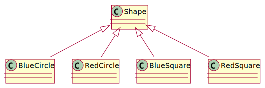
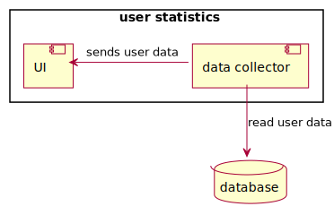

Software Engineering
week 1
readings
- Software Architecture Metaphors - by Lisa Stähli
- What is Software Architecture? - by Kevlin Henney
- Practical Tips on Software Architecture Design, Part One - by Marco Bürckel
- Practical Tips on Software Architecture Design, Part Two - by Marco Bürckel
- Why Write ADRs - by Eli Perkins
week 2
readings
scrum
zombie scrum
kanban
week 3
readings
requirement analysis
- SDLC Guide: Requirement Analysis in Software Engineering - by Arkadiusz Krysik
- What’s in a Story? - by Daniel Terhorst-North
- Making sense of MVP (Minimum Viable Product) – and why I prefer Earliest Testable/Usable/Lovable - by Henrik Kniberg
- How to Carry Out a Requirements Analysis - by Kelechi Udoagwu
user story mapping
- Jeff Patton’s original
blogpost
- Five common story mapping mistakes - by Jeff Patton
- The Ultimate Guide to User Story Mapping - by Nick Muldoon
- Mapping User Stories in Agile - by Anna Kaley
- Quickstart Guide to User Story Mapping
optional
week 4
readings
UML
C4 model
- C4 model
- The C4 Model for Software Architecture - by Simon Brown
optional
week 5
readings
- The Full-stack Software Design & Architecture Map - by Khalil Stemmler
SOLID
- A Solid Guide to SOLID Principles - by Sam Millington
- SOLID Design Principles - Devopedia
inversion of control
- Inversion Of Control - by Martin Fowler
- Don’t Call Us, We’ll Call You: The Hollywood Principle for Maintainable Code - by Teni Gada
topologies
- Hexagonal Architecture - by Sven Woltmann
- The Onion Architecture - by Jeffrey Palermo
MVC-MVP-MVVM
- MVC vs MVP vs MVVM - by Priya Pedamkar
- Alternatives To MVC - by Anthony Ferrara
optional
- The Composition Over Inheritance
Principle
- with Python examples
- Railway oriented programming - by Scott Wlaschin
week 6
readings
- riskstorming.com
- OWASP Risk Rating Methodology
- Story points and estimation - by Dan Radigan
- What Scrum Says About Estimates
- How to create a Minimal, Reproducible Example
week 7
readings
- What is wireframing? A complete guide - by Louise Bruton
- UI Prototypes
- Practical training for creating more usable products - by balsamiq
week 9
readings
- Code Smells - by Jeff Atwood
- How To Write Unmaintainable Code - by Roedy Green
- Code Review Guidelines for Humans - by Philipp Hauer
- How to Do Code Reviews Like a Human (Part One) - by Michael Lynch
week 10
readings
- What Is Test-driven Development and Why It’s Important - by Anna Khrupa
- What’s in a Story? - by Daniel Terhorst-North
- Modern Test-Driven Development in Python - by Jan Giacomelli
- The Cycles of TDD - by Robert C. Martin
- Arrange-Act-Assert
- Readme Driven Development - by Tom Preston-Werner
- Defining Legacy Code - by Eli Lopian
optional
- The Transformation Priority Premise - by Robert C. Martin
- There is No Such Thing as a Unit Test - by Andrew Watson
- Why Most Unit Testing is Waste - by James O Coplien
week 11
readings
- Version control concepts and best practices - by Michael Ernst
- Continuous Integration - by Martin Fowler
- What Is Software Deployment? Process and Best Practices - by Washija Kazim
- 11 DevOps Principles and Practices to Master: Pro Advice - by Fernando Doglio
- The Cost of Interruption for Software Developers - by Steven To
- The high price of context switching for developers & ways to avoid it - by Nitin Pande
- Programmer Interrupted - by Chris Parnin
optional
- A successful Git branching
model - by
Vincent Driessen
- a criticism: A succesful Git branching model considered harmful - by Jussi Judin
- a comparison of branching strategies - by Scott Shipp
- Why I don’t like SemVer anymore - by Brett Cannon
week 12
schedule
| week | date | lecture | practical class |
|---|---|---|---|
| 1 | 2024-09-10 | intro, software architecture, SDLC | |
| 2 | 2024-09-17 | scrum, kanban | |
| 3 | 2024-09-24 | requirement analysis, user story mapping | project assignment |
| 4 | 2024-10-01 | UML, C4 | project workshop |
| 5 | 2024-10-08 | design patterns | project workshop |
| 6 | 2024-10-15 | interfaces, implementation planning | project workshop |
| 7 | 2024-10-22 | wireframing, clean clode | project workshop |
| 8 | 2024-10-29 | school holiday | |
| 9 | 2024-11-05 | code quality, code review | project workshop |
| 10 | 2024-11-12 | testing, legacy code | project workshop |
| 11 | 2024-11-19 | CI, automatization, devops | project workshop |
| 12 | 2024-11-26 | summary, course feedback | project workshop |
| 13 | 2024-12-03 | midterm | project demo |
| 14 | 2024-12-10 | no planned lecture |
materials
- available online in two formats
- hangout
- presentation
- pintergreg.github.io/software-engineering

tools
- diagram drawing:
- whiteboard:
- kanban board
- code hosting / task management
program vs. software
A computer program is a sequence or set of instructions in a programming language for a computer to execute. It is one component of software, which also includes documentation and other intangible components.
ISO/IEC 2382:2015 via Wikipedia (Wikipedia contributors, 2024a)

program is like a recipe
There is a metaphor saying that a program is like a recipe.
The computer follows the instructions of a program as the cook follows the instruction in a recipe.
Consequently programming is like creating a recipe.
for i in range(1, 101):
if i % 15 == 0:
print("" + "FizzBuzz")
elif i % 3 == 0:
print("" + "Fizz")
elif i % 5 == 0:
print("" + "Buzz")
else:
print(i)
It is easy to read this code snippet and figure out what it does, but constructing an algorithm might be more complicated.
It contains a loop going from 1 to 100 (ranges are not closed in Python, so 101 is excluded and the range step is 1 by default). If the loop variable is dividable by 15, “FizzBuzz” is printed to the screen. If it is only dividable by 3 “Fizz” is printed, if only by 5 “Buzz” is printed. In any other cases the number id printed.
Writing a computer program requires a nuanced understanding of the problem being solved by the computer program, pros and cons of various approaches, etc. It also requires the knowledge and expertise to describe those steps in a manner amenable to execution by a computer.
programming vs. software development

- does that mean a program is not
- planned
- documented
- tested
- verified?
- the main difference is the formality of the process
- which correlates the complexity of the project
A program code is only a part of a software. Programming is more or less a synonym to coding.
As a software is more than just the code, software development is more than just coding/programming. The work is planned, documented, tested, verified, and framed by a process.
If programming is like creating a recipe, software development is more like running a restaurant. One should come up with recipes, cook the food, but the restaurant also needs constant ingredient logistics and preparation, food serving, marketing, cleaning etc.
software development is like building a house
- the software development is often compared to house building
- which is more like a sequential process
- after the planning (including building permit, budget, etc.), the
foundation is built first, then walls and the roof
- these phases cannot be swapped
- after the construction is finished, the contractor leaves the site

maintenance?
software development not is like building a house
a software does not have to obey the laws of physics
- in software development you can start with the door of the second floor bathroom
- the size of a room can be changed during the construction – even several times
software development is like gardening
- a garden needs to be taken care of constantly
- without attention the garden will decay
- maintenance is part of software development
- software rots
based on Software Architecture Metaphors by Lisa Stähli (Stähli, 2021)
Another famous metaphor is the gardening. The most important aspect of the gardening is that a garden needs to be taken care of constantly. Without attention the garden will decay, which is also true for the software; the software can rot.
There are two types of software rot: dormant rot and active rot.
what is software rot?
Software rot (or software entropy) is the degradation, deterioration, or loss of the use or performance of software over time (Wikipedia contributors, 2024b).
dormant rot: the software in question is not changed, but as the environment evolves, it eventually becomes dysfunctional

Environment change can be either software or hardware. The operating system, a software framework or even a hardware can be outdated to
The photo shows the San Fransico Muni metro, which still uses floppy disks to load its Automatic Train Control System every morning. It is planned to replace by the end of the decade. The system works without any problems, but the risk of failure is getting higher. (Harding, 2024)
active rot
- the software has undergone constant modifications but gradually loses its integrity
- the constant updates / bug fixing can lead to an evolution process,
- which makes the program deviate from its original design,
- even introducing newer bugs

It is said that nothing is more permanent than a temporary fix. A quick fix often ignores the architectural design, not documented properly, thus contributes to the software rot.
A change in a production system should be properly planned in every possible details. For example, because it can have side effects, or can affect the architecture. Also, the documentation needs to be updated. Both documentations actually since there is a development documentation, that should contain information about the system for the developers and a user documentation (manual) for the operators of the system.
software development is like gardening - cont.
- external factors like weather, pests, weeds can influence the garden
- change in user requirements, and the external dependencies such as frameworks, libraries, etc. can affect the software
based on Software Architecture Metaphors by Lisa Stähli (Stähli, 2021)
Another similarity to gardening is that external factors can influence the software.
- gardeners has a set of tools, selected for the characteristics of the garden and the gardener
- a beautiful garden is a piece of art
- which can also serve a function, like producing vegetables / fruits
- software developer also uses tools chosen according to the environment and type of software
- software is a piece of art, e.g., the UI has to be not just
functional, but aesthetic and ergonomic
- software code/design is also a piece of art; see software craftmanship (later)
based on Software Architecture Metaphors by Lisa Stähli (Stähli, 2021)
software craftmanship
As aspiring Software Craftsmen we are raising the bar of professional software development by practicing it and helping others learn the craft. Through this work we have come to value:
- Not only working software, but also well-crafted software
- Not only responding to change, but also steadily adding value
- Not only individuals and interactions, but also a community of professionals
- Not only customer collaboration, but also productive partnerships
That is, in pursuit of the items on the left we have found the items on the right to be indispensable.
© 2009, the undersigned. This statement may be freely copied in any form, but only in its entirety through this notice.
software growth
24 million lines of code – operational and support – needed for the F-35 to be fully operational
the more, the better?
if we wish to count lines of code, we should not regard them as “lines produced” but as “lines spent”
E. W. Dijkstra EWD 1036
Every line of code written comes at a price: maintenance. To avoid paying for a lot of code, we build reusable software. The problem with code re-use is that it gets in the way of changing your mind later on.
Some people may consider the code as the product. In this regard, more lines of code means more product. If you write more code you work better, which is not true. You should work smarter, not harder.
As Dijkstra said, lines should considered an expense, which you want to minimize, not maximize. More code means more plants in your garden to take care of. It requires more resources, but at the same time it also increases complexity.
keep it simple
A designer knows he has achieved perfection not when there is nothing left to add, but when there is nothing left to take away.
- KISS, an acronym for “Keep it simple, stupid!”
- a variations: keep it stupidly simple
- the term was popular in the 70s
The design, the code should be kept as simple as possible. When you want to simplify a design, keep only those parts that are absolutely necessary to get the job done.
Linux 5.8 – 800,000 new lines of code
Linux Torvalds: despite not really having any single thing that stands out… 5.8 looks to be one of our biggest releases of all time
- how is it manageable?
- process
- version control
- each change must do only one thing
- proper documentation
- changes cannot break the software
- rigorous and automated testing
version control
- version control (a.k.a. revision control) is system for recording and managing changes made in files
- commonly used to manage source code
- however, it can be used to tracking changes to any kind of files
- people often employ their own version control system, without realising it

based on Simon Mutch’s Version Control materials
why you should use version control (for everything)
In practice, everything that has been created manually should be put in version control, including programs, original field observations, and the source files for papers.
– Best Practices for Scientific Computing; Wilson et al. 2012 (arXiv:1210.0530)
this presentation is under version control as well
Many services have some kind of version control built in. For example Google Docs or Microsoft Word also provides some level of version control.
project complexity

what is software architecture?
“Architecture” is a term that lots of people try to define, with little agreement. There are two common elements: One is the highest-level breakdown of a system into its parts; the other, decisions that are hard to change.
– Martin Fowler - Patterns of Enterprise Application Architecture
In most successful software projects, the expert developers working on that project have a shared understanding of the system design. This shared understanding is called ‘architecture’. This understanding includes how the system is divided into components and how the components interact through interfaces. These components are usually composed of smaller components, but the architecture only includes the components and interfaces that are understood by all the developers.
Ralph Johnson, XP mailing list
All architecture is design but not all design is architecture. Architecture represents the significant design decisions that shape a system, where significant is measured by cost of change.
– Grady Booch
topologies


Layered Architechture

message bus
- shared communication channel that connects multiple components or services
- simple, extensible
server/client architecture
- consists of two parts
- client and server
- distributed
- always the client initiates a connection to the server
- while the server process always waits for requests from any client
references
Harding, S. (2024). San francisco’s train system still uses floppy disks—and will for years. In Ars Technica. https://www.wired.com/story/san-francisco-muni-trains-floppy-disks .
Stähli, L. (2021). Software Architecture Metaphors — medium.com. https://medium.com/decoding-tech/software-architecture-metaphors-90992e9be5f4 .
Wikipedia contributors. (2024a). Computer program — Wikipedia, the free encyclopedia. https://en.wikipedia.org/w/index.php?title=Computer_program&oldid=1233276268 .
Wikipedia contributors. (2024b). Software rot — Wikipedia, the free encyclopedia. https://en.wikipedia.org/w/index.php?title=Software_rot&oldid=1236668404 .
content
- software development life cycle
- waterfal
- V model
- incremental
- agile
- SCRUM
- kanban
waterfall model

- earliest SDLC model
- the origin of the name is that the progress flows in one direction, downwards like a waterfall
- not iterative, not flexible
- linear, sequential phases
criticism
- Clients may not know exactly what their requirements are before they see working software and so change their requirements, leading to redesign, redevelopment, and retesting, and increased costs. (Parnas & Clements, 1986) In most cases the people who comission the building of the a software system do not know exactly what they want and are unable to tell us all they know.
modified waterfall model

V model (Forsberg & Mooz, 1991)
- still rigid
- each phase has output and a review process
- errors are found at early stage
- decreases the risk of failure
- large to small: testing is done in a hierarchical perspective

The unit testing will be discussed later in the testing chapter. For now it is enough to know that it is a tool to test the lower level part of the software.
iterative model
- software is built incrementally,
- with each iteration adding new features or refining existing ones
- possible to get feedback after each iteration
- can be rigid within an iteration

agile model
- continuous collaboration and fast response to change, while the iterative model takes a more gradual approach, building up the final product over multiple iterations
- scrum is an agile methodology

the agile manifesto
We are uncovering better ways of developing software by doing it and helping others do it. Through this work we have come to value:
- Individuals and interactions over processes and tools
- Working software over comprehensive documentation
- Customer collaboration over contract negotiation
- Responding to change over following a plan
That is, while there is value in the items on the right, we value the items on the left more.
. . .
Principles behind the Agile Manifesto
- The agile does not mean a specific methodology, so SCRUM is not the only agile approach (the course will cover SCRUM later), and agile is not the only approach.
- The documentation is still important, the course will cover later what and how should be documented, but the point is no matter how much documentation you have, if the software does not work as expected.
- In the business world, contracts are important, especially contract violations and the penalty clauses, but customers should be treated as a partner, and collaborative communication should come first, before giving more jobs to the lawyers.
- Planing is import (even having a plan B is often advisable), but the world is in constant change, so flexibility is required. Compared to the waterfall, which requires you to follow the initial plan, agile allows changes during the development. Remember, programming is more like gardening.
There are also twelve principles behind the Agile Manifesto, that provides some more detailed interpretation for the values.
1. Principle behind the Agile Manifesto
Our highest priority is to satisfy the customer through early and continuous delivery of valuable software.
. . .
Release early. Release often. And listen to your customers.
Eric S. Raymond: The Cathedral and the Bazaar (1997)
The “release early, release often mantra” is quite widespread, but I rarely see the “listen to your customers” part. One of the main principle of agile is to collaborate with the customer, who should be involved into the development. Show them the software as soon as possible and ask for feedback. Feedback means there will be change requests.
2. Principle behind the Agile Manifesto
Welcome changing requirements, even late in development. Agile processes harness change for the customer’s competitive advantage.
A feedback is something that represent value, so change requests should be welcomed. Satisfing the customer is good for the business.
3. Principle behind the Agile Manifesto
Deliver working software frequently, from a couple of weeks to a couple of months, with a preference to the shorter timescale.
This is a significant seep-up compared to the waterfall, where it could even take years while the customer sees something in action. And if you consider this as a users’ perspective, small changes are easier to adapt, than drastic restructurings which are comparable to learn a completely new software.
4. Principle behind the Agile Manifesto
Business people and developers must work together daily throughout the project.
Polarization is not good. There should not be sides, business people and developers must not consider the other foes. They work together for the same goal.
5. Principle behind the Agile Manifesto
Build projects around motivated individuals. Give them the environment and support they need, and trust them to get the job done.
6. Principle behind the Agile Manifesto
The most efficient and effective method of conveying information to and within a development team is face-to-face conversation.
While it is not untrue. I consider it outdated from some aspect.
7. Principle behind the Agile Manifesto
Working software is the primary measure of progress.
8. Principle behind the Agile Manifesto
Agile processes promote sustainable development. The sponsors, developers, and users should be able to maintain a constant pace indefinitely.
9. Principle behind the Agile Manifesto
Continuous attention to technical excellence and good design enhances agility.
10. Principle behind the Agile Manifesto
Simplicity–the art of maximizing the amount of work not done–is essential.
11. Principle behind the Agile Manifesto
The best architectures, requirements, and designs emerge from self-organizing teams.
12. Principle behind the Agile Manifesto
At regular intervals, the team reflects on how to become more effective, then tunes and adjusts its behavior accordingly.
manifesto for software craftsmanship
As aspiring Software Craftsmen we are raising the bar of professional software development by practicing it and helping others learn the craft. Through this work we have come to value:
- Not only working software, but also well-crafted software
- Not only responding to change, but also steadily adding value
- Not only individuals and interactions, but also a community of professionals
- Not only customer collaboration, but also productive partnerships
That is, in pursuit of the items on the left we have found the items on the right to be indispensable.
This reads like an answer to the agile manifesto. The working software is good, but should well-crafted, which aligns with the ninth agile principle: “Continuous attention to technical excellence and good design enhances agility.”
agile vs. waterfall
| agile | waterfall |
|---|---|
| incremental | sequential |
| phases repeated | phases completed exactly once |
| flexible | rigid |
| allows changes during the development | no change once the development started |
agile vs. waterfall
Can waterfall work? Yes, it can, if the customer exactly knows what they want and can express it in technical terms.
Although usually the customer does not know what they want, so agile usually work better.
SCRUM

kanban

- notes move from left to right
- order denote priority
- allways process the right- and topmost one to finish it ASAP
- tool-dependent but a note can indicate:
- who’s responsible
- how much effort to do it
- etc.
The word “kanban” roughly means board in Japanese (signboard or billboard, actually).
kanban for job hunting

Kanban is a general technique, you can use it for household chores, for job applications (e.g., backlog, application sent, interview, done, declined). A whiteboard can be used or there a many different software for the task. Some general examples are: - Trello (https://trello.com/), - free and paid plans - Taiga (https://taiga.io/). - open source, self-hosted, cloud based free and paid plans - WeKan (https://wekan.github.io/) - open source, self-hosted
kanban in software development

Kanban is widespread in software development. The major code hosting solutions (GitHub, GitLab, Bitbucket, Gitea) all have some board functionalities.
SCUM + kanban = scrumban
- SCRUM and kanban can coexist
- quite new methodology
references
Forsberg, K., & Mooz, H. (1991). The relationship of system engineering to the project cycle. Center for Systems Management, 5333.
Parnas, D. L., & Clements, P. C. (1986). A rational design process: How and why to fake it. IEEE Transactions on Software Engineering, 2, 251–257.
Royce, W. W. (1970). Managing the development of large software systems: Concepts and techniques. Proc. IEEE WESTCON, Los Angeles, 1–9.
this presentation is based on The Scrum Guide (2020)
by Ken Schwaber
and Jeff Sutherland (Schwaber & Sutherland, 2020)
available from scrumguides.org under CC BY-SA 4.0
or download directly from here
what is scrum?
Scrum is a lightweight framework that helps people, teams and organizations generate value through adaptive solutions for complex problems.
Scrum employs an iterative, incremental approach to optimize predictability and to control risk. Scrum engages groups of people who collectively have all the skills and expertise to do the work and share or acquire such skills as needed.
scrum in a nutshell
scrum requires a scrum master to foster an environment where:
- a product owner orders the work for a complex problem into a product backlog
- the scrum team turns a selection of the work into an increment of value during a sprint
- the scrum team and its stakeholders inspect the results and adjust for the next sprint
- repeat
scrum team
- the scrum team consists of
- one scrum master,
- one product owner,
- and developers
- there are no sub-teams or hierarchies
These are more roles, not necessarily people. The scrum master and the product owner can also be a developer.
size of a scrum team
- small enough to remain nimble and large enough to complete work in a
sprint
- typically 10 or fewer people
- 3 to 9 people is optimal
- smaller teams communicate better and are more productive
- if a team becomes too large, they should consider reorganizing into
multiple cohesive scrum teams
- each focused on the same product
- therefore, they should share the same product goal, product backlog, and product owner
communication within a team

$$ \frac{3(3 − 1)}{2} = 3 $$

$$ \frac{4(4 − 1)}{2} = 6 $$


$$ \frac{5(5 − 1)}{2} = 10 $$
$$ \frac{n(n − 1)}{2} $$
team size
scrum teams are cross-functional

- the members have all the skills necessary to create value each sprint
- they are also self-managing, meaning they internally decide who does what, when, and how
developers
- committed to creating any aspect of a usable increment each sprint
- the specific skills needed by the developers are often broad and will vary with the domain of work
- developers are accountable for
- creating a plan for the sprint, the sprint backlog,
- instilling quality by adhering to a definition of done,
- adapting their plan each day toward the sprint goal, and
- holding each other accountable as professionals

definition of done
- checklist
- defines steps to complete the sprint goal
- helps to track the progress of the sprint
- the sprint is done, if every element of the checklist is done

product owner
- accountable for maximizing the value of the product resulting from the work of the scrum team
- also accountable for effective product backlog management, which
includes:
- developing and explicitly communicating the product goal,
- creating and clearly communicating product backlog items,
- ordering product backlog items, and
- ensuring that the product backlog is transparent, visible and understood
The product owner may do the above work or may delegate the responsibility to others. Regardless, the product owner remains accountable.
scrum master
- accountable for
- establishing scrum as defined in the Scrum Guide
- by helping everyone understand the theory and practice, both within the scrum team and the organization
- for the scrum team’s effectiveness
- by enabling the scrum team to improve its practices, within the scrum framework
- establishing scrum as defined in the Scrum Guide
You can watch a parody about a the scrum master role: Scrum Master - Funny movie about The Power of Scrum (5m 23s)
scrum master serves the scrum team
- coaching the team members in self-management and cross-functionality,
- helping the scrum team focus on creating high-value increments that meet the definition of done,
- causing the removal of impediments to the scrum team’s progress, and
- ensuring that all scrum events take place and are positive, productive, and kept within the timebox
scrum master serves the product owner
- helping find techniques for effective product goal definition and product backlog management,
- helping the scrum team understand the need for clear and concise product backlog items,
- helping establish empirical product planning for a complex environment, and
- facilitating stakeholder collaboration as requested or needed
scrum master serves the organization
- leading, training, and coaching the organization in its scrum adoption,
- planning and advising scrum implementations within the organization,
- helping employees and stakeholders understand and enact an empirical approach for complex work, and
- removing barriers between stakeholders and scrum teams
scrum events
- sprint
- sprint planning
- daily scrum
- sprint review
- sprint retrospective

Besides people there are events in scrum.
sprint
Sprints are the heartbeat of Scrum, where ideas are turned into value.
- fixed length events (maximum one month) to create consistency
- a new sprint starts immediately after the end of the previous
during the sprint
- no changes are made that would endanger the sprint goal,
- quality does not decrease,
- the Product Backlog is refined as needed, and
- scope may be clarified and renegotiated with the product owner as more is learned
about sprints
- in the case of a long sprint
- the sprint goal may become invalid
- complexity may rise, and
- risk may increase
- each sprint may be considered a short project
- a sprint could be cancelled if the sprint goal becomes obsolete
- only the product owner has the authority to cancel the sprint
tracking progress - burndown chart
burndown chart is a graphical representation of work left to do versus time (Wikipedia contributors, 2024)


- two week sprint
- 26 tasks
- ideal work line (green)
- actual work line (red)
- not realistic
- finished tasks per day (blue bars)
Various practices exist to forecast progress, like burn-downs, burn-ups, or cumulative flows.
Let’s assume a 2-week sprint with 26 tasks. The burndown chart shows the work left to do compared to the time (days of the sprint).
Often used in agile software development methodologies such as Scrum. However, burndown charts can be applied to any project with measurable progress over time (Wikipedia contributors, 2024).
Remaining work can be represented in either the number of tasks or the amount of time required to finish the tasks. The ideal work line often assumes a linear progress, which is not realistic, as tasks are often not finished at the beginning of the sprint. Partly because planning is necessary to solve tasks, partly because it may be required to learn a new technology to complete a task.
Read more about burndown chart at Feel The Burn, Getting the Most out of Burn Charts by George Dinwiddie (PDF, 6 pages).
tracking progress - cumulative flow diagram

Another diagram used to track progress is cumulative flow diagram (CDF). It is a stacked area chart that shows the various statuses of the tasks. It can help to identify bottlenecks.
Although it often used for kanban-style workflow, it can also work for scrum.
Read more about CDF fromPawel Brodzinski.

widening of bands: bottleneck;
more tasks enter that phase than
leaving

narrowing of bands: throughput is higher than the number of tasks entering the workflow
figures are based on (Boogaard, 2021)
Read more from Kat Boogaard.
sprint planning
- sprint planning initiates the sprint
- collaborative work of the entire scrum team
- the product owner ensures that attendees are prepared to discuss the most important product backlog items and how they map to the product goal
- the scrum team may invite other people to provide advice
- sprint planning lasts a maximum of eight hours for a one-month sprint
- for shorter sprints the event is shorter

topics of sprint planning - why is this sprint valuable?
- the product owner proposes how the product could increase its value and utility in the current sprint
- the whole scrum team then collaborates to define a sprint goal that communicates why the sprint is valuable to stakeholders
- the sprint goal must be finalized prior to the end of sprint planning
topics of sprint planning - what can be done this sprint?
- in agreement with the product owner, the developers select items from the product backlog to include in the current sprint agenda
- the scrum team may refine these items during this process
- not easy to select how much can be completed within a sprint
- the more the developers know about
- their past performance (e.g., burndown charts),
- their upcoming capacity (e.g., vacation, holidays), and
- the definition of done,
- the more confident they will be in their sprint forecasts
topics of sprint planning - wow will the chosen work get done?
- for each selected item, the developers plan the work necessary to create an increment that meets the DoD
- often done by decomposing product backlog items into smaller work
items of one day or less
- tasks completable in 1-4 hours may be preferred
- how this is done is up to the developers
- no one else tells them how to turn product backlog items into increments
sprint planning - summary
- select the sprint goal
- select product backlog items to achieve the sprint goal
- plan how they shall be implemented
The sprint goal, the product backlog items selected for the sprint, plus the plan for delivering them are together referred to as the sprint backlog.
daily scrum
- the purpose of the daily scrum is to inspect progress toward the sprint goal and adapt the sprint backlog as necessary, and discussing the upcoming planned work
- the daily scrum is a 15-minute event for the developers
- to reduce complexity, it is held at the same time and place every working day of the sprint
- if the product owner or scrum master are actively working on items in the sprint backlog, they participate as developers
daily stand-up
- the developers can select whatever structure and techniques they want
- also called daily stand-up, because they stand up from the desks and
go to a meeting place
- as it is limited to 15 minute, no need to book a meeting room;
- daily scrums improve communications, identify impediments, promote quick decision-making, and consequently eliminate the need for other meetings
Daily scrum can eliminate the need for unnecessary meetings, where the whole team has to attend. However, daily stand-up is a perfect occasion to arrange a one-to-one meeting with an other developer to solve an issue.
three questions
each team member participating the daily scrum answers three questions:
- what was done since the last daily scrum?
- what will be done till the next daily scrum?
- are there any impediments that prevent the work?

keep daily stand-up short
- answer the three question only
- do not start finding solutions for the problems
- the daily scrum is not the only time developers are allowed to discuss the sprint backlog
- they can meet throughout the day for more detailed discussions
sprint review
- the scrum team presents the their work to key stakeholders
- and the progress toward the product goal is discussed
- the attendees collaborate on
what to do next - the product backlog may also be adjusted to meet new opportunities

Also known as “demo”, when the scrum team demonstrates the sprint goal to the stakeholders.
- should not limiting it to a presentation, the working product should be demonstrated and discussed
- timeboxed to a maximum of four hours for a one-month sprint
- for shorter sprints, the event is usually shorter
Also known as “demo”, when the scrum team demonstrates the sprint goal to the stakeholders.
sprint retrospective
- he purpose of the sprint retrospective is to increase quality and effectiveness
- the sprint retrospective concludes the sprint
- it is timeboxed to a maximum of three hours for a one-month sprint
- for shorter sprints, the event is usually shorter
- the scrum team inspects how the last sprint went with regards to
- individuals,
- interactions,
- processes,
- tools, and
- their definition of done
- the scrum team discusses
- what went well during the sprint,
- what problems it encountered, and
- how those problems were (or were not) solved
retrospective starfish

- divide the whiteboard to 5 parts
- every team member adds sticky notes to the respective parts
During the sprint retrospective, it could discussed what the team should start doing to increase the effectiveness. What needs to be stopped because it decreases the effectiveness. What was good, but needs to do more, what was not so good, so needs to do less. And what is good as is, so the team should keep doing without change.
For example, less online meeting, because it is not so efficient as face-to-face ones. For a given team, for another team, the opposite might be true.
scrum artifacts
- scrum artifacts represent work or value
- they are designed to maximize transparency of information
- the product backlog
- progress towards the product goal
- sprint backlog
- progress within the sprint goal
- definition of done
- state of the product increment
product backlog
- ordered list of what is needed to improve the product
- describes a future state of the product
- product owner is responsible for its content and prioritization
product backlog refinement
product backlog refinement is the act of breaking down and further defining product backlog items into smaller more precise items.
sprint backlog
- composed of the sprint goal (why),
- the set of product backlog items selected for the sprint (what),
- a plan for delivering the increment (how)
- by and for the developers
- visible, real-time snapshot of the sprint progress

The sprint goal is created during the sprint planning event and then added to the sprint backlog. If the work turns out to be different than the developers expected, they collaborate with the product owner to negotiate the scope of the sprint backlog within the sprint without affecting the sprint goal.
- if the work may turn out different than expected
- because software development is like gardening
- then the developers negotiate the scope with the product owner without affecting the sprint goal
increment
- an increment is a step toward the product goal
- each increment is additive to all prior increments
- and verified, ensuring that all increments work together
- in order to provide value, the increment must be usable
- multiple increments may be created within a sprint
- work cannot be considered part of an increment unless it meets the definition of done
Writing some functions that might be useful later does not produce an increment. Increment is useful for the customer/user.
scrum of scrums
- each scrum team delegates an “ambassador” to attend the scrum of scrums meetings
- meetings are not as frequent as daily scrum
- synchronizes state of the scrum teams
- agenda: same 3 questions but regarding a team
- plus, issues that (can) affect the other scrum teams

Also known as meta scrum.
zombie scrum
Zombie Scrum is Scrum, but without the beating heart of working software.
in details
At first sight, zombie scrum seems to be a normal scrum. But it lacks a beating heart. The Scrum teams do all the Scrum events but a potentially releasable increment is rarely the result of a Sprint. The team also doesn’t have any intention to improve their situation. Actually, nobody cares about this team. The stakeholders have forgotten the existence of this team a long time ago.
mindset
zombie scrum
although every sprint can result in a new version, only the final
version delivers real value
healthy scrum
every sprint delivers value

working software
zombie scrum
working software is nice to have
healthy scrum
working software is essential
what is work
zombie scrum
writing code is work, everything else is a waste of time
healthy scrum
writing code is important part of work, but building good software
requires frequent interaction with the team, stakeholders, and peers

treatments
- Zombie Scrum teams often benefit from a shortened Sprint length. Instead of three to four-week iterations decrease the length to two weeks or even just one.
- Focus the Sprint Planning on answering the question of what type of impact the team would like to achieve within the upcoming Sprint.
- Start the Daily Scrum by reviewing the Sprint Goal and asking what achievements the team has made towards reaching that goal.
- Use the roadmap to provide context for the insights from the Review meeting. And for heaven’s sake, invite some real customers or stakeholders!
- Use the Retrospective not to drag out the same old problems but to dream big. A transformational approach might be better suited than an incremental one.
references
Boogaard, K. (2021). How to use a cumulative flow diagram – wrike. https://www.wrike.com/blog/how-to-use-cumulative-flow-diagram .
Schwaber, K., & Sutherland, J. (2020). The scrum guide. https://scrumguides.org/docs/scrumguide/v2020/2020-Scrum-Guide-US.pdf
Wikipedia contributors. (2024). Burndown chart — Wikipedia, the free encyclopedia. https://en.wikipedia.org/w/index.php?title=Burndown_chart&oldid=1219224248 .
this presentation is based on The Kanban Guide (2020) by Daniel S. Vacanti
available from kanbanguides.org under CC BY-SA 4.0
or download directly from here
what is kanban?
Kanban is a strategy for optimizing the flow of value through a process that uses a visual, pull-based system
principles of kanban
- defining and visualizing a workflow
- actively managing items in a workflow
- improving a workflow
These Kanban practices are collectively called a Kanban system. Those who participate in the value delivery of a Kanban system are called Kanban system members.
defining and visualizing the workflow
- definition of workflow (DoW)
- the visualization of the DoW is called a Kanban board
- states (columns)
- conditions when to move an item between columns
- a definition of the individual units of value that are moving through
the workflow
- referred to as work items (or items)

defining and visualizing the workflow
- a definition for when work items are started and finished within the
workflow
- a workflow may have more than one started or finished points

defining and visualizing the workflow
- one or more defined states between the started to finished
- item between start and finish point are considered work in progress (WIP)
- a definition of how WIP will be controlled from started to finished
- explicit policies about how work items can flow through each state

Service Level Expectation
- a service level expectation (SLE)
- which is a forecast of how long it should take a work item to flow from started to finished
- the SLE itself has two parts: a period of elapsed time and a
probability associated with that period
- e.g., 85% of work items will be finished in eight days or less

Service Level Expectation
- the SLE should be based on historical cycle time
- and once calculated, should be visualized on the Kanban board
- if historical cycle time data does not exist, a best guess will do until there is enough historical data

improving the Workflow
- it is common practice to review the DoW from time to time to discuss
and implement any changes needed
- e.g., need a new column for a new state
- not necessary to wait for a formal meeting at a regular cadence to make these changes
kanban measures
- WIP: number of work items started but not finished
- throughput: number of work items finished per unit of time
- Note the measurement of throughput is the exact count of work items
- work item age: elapsed time from when a work item started
- cycle time: time between when a work item started and finished
Visualizing these metrics using charts is recommended. It does not matter what kind of charts are used as long as they enable a shared understanding of the Kanban system’s current health and performance.
Toyota’s six rules (Wikipedia contributors, 2024)
- Each process issues requests (kanban) to its suppliers when it consumes its supplies.
- Each process produces according to the quantity and sequence of incoming requests.
- No items are made or transported without a request.
- The request associated with an item is always attached to it.
- Processes must not send out defective items, to ensure that the finished products will be defect-free.
- Limiting the number of pending requests makes the process more sensitive and reveals inefficiencies.
scrumban
Scrum contributes to scrumban:
- sprints
- daily standups
- retrospectives
Kanban contributes to scrumban:
- board
- cards
- work-in-progress limits
references
Wikipedia contributors. (2024). Kanban — Wikipedia, the free encyclopedia. https://en.wikipedia.org/w/index.php?title=Kanban&oldid=1239509091.
requirement analysis
Requirement analysis is all about understanding what software is supposed to do and the constraints it must operate within (Krysik, 2023).
- first step of the software development life cycle (SDLC)
- about understanding the task to avoid costly mistakes
this section is based on (Krysik, 2023)
steps of requirement analysis
- stakeholder identification
- elicitation of requirements (gathering data)
- documentation of requirements
- analysis and negotiation
- validation and verification
1. stakeholder identification
- not just the customers who commission the software
- also end users
- different roles / groups
2. elicitation of requirements
the team actively gathers detailed information about what the software needs to do from the identified stakeholders (Krysik, 2023)
- interviews
- one-on-one conversations with
stakeholders
to understand their needs
- one-on-one conversations with
stakeholders
- questionnaires
- gather information from a larger group
- user observation
- how potential users interact with
existing systems
to identify unspoken needs or problems - telemetry
- how potential users interact with
existing systems

3. documentation of requirements
for who
- future self
- colleagues
- every stakeholder of the project
how
- searchable
- organization-wide knowledge sharing (e.g., wiki)
- version tracked
- traceable
- who wrote / edited / approved it
4. analysis and negotiation
reviewing the documented requirements to make sure they are realistic and its implications are understood
- how difficult will it be to implement?
- does it conflict with any other requirements?
- is it actually necessary for the software’s success?

Negotiation comes into play when there are conflicting requirements or
limitations in resources like time or budget.
[…]
The goal
here is to finalize a set of requirements that is achievable and aligns
with the overall objectives of the project. (Krysik, 2023)
5. validation and verification
validation
- is about confirming that the requirements actually meet the needs of the stakeholders
- are we building the right thing?
- every stakeholder of the project
verification
- making sure that the requirements are documented correctly and
consistently
- like proofreading and quality checking
- to ensure that all requirements are clear, unambiguous, and consistent
- are we building the thing right?
requirement smells
- based on the idea of code smells (later in the course)
- (language based) signs in the requirements that are not necessarily
wrong but could be problematic, e.g.,:
- subjective language
- “The architecture as well as the programming must ensure a simple and efficient maintainability.”
- ambiguous adverbs and adjectives
- “If the (…) quality is too low, a fault must be written to the error memory.”
- non-verifiable terms
- “The system may only be activated, if all required sensors (…) work with sufficient measurement accuracy.”
- subjective language
examples from (Femmer et al., 2017)
requirement analysis document example
contents
- introduction
- stakeholder identification
- methodology
- detailed requirements
- functional requirements
- non-functional requirements
- data flow diagrams or models
- prioritization of requirements
- constraints and assumptions
- acceptance criteria (DoD)
- appendices
- version history and approvals
- it is a living document
- often updated throughout the project
as new information becomes available or requirements evolve - its main goal is to provide a clear, detailed, and agreed-upon set of requirements that guide the software development process
functional and non-functional requirements
functional requirements define what a system is supposed to do
and
non-functional requirements define how a system is supposed to operate
(Wikipedia contributors, 2024)
functional
- features
- the webserver can serve pages via HTTP2
non-functional
- quality goals, quality of service requirements
- webserver is available 99.9% of time
(yearly about 8h 41m downtime) - can serve at least 5.000 queries per sec
more examples on Wikipedia
non-functional requirements specifies criteria that can be used to evaluate the operation of a system, rather than specific behaviours
dependencies


dependencies within a software
- dependencies between the software components are not always obvious
- and change over time
- the core functionalities should be determined at the start of the
project
- that can serve as a foundation for the rest of the software
- this requires comprehensive understanding of the project
- requirement analysis
minimum viable product
a new product or service is created with the minimum features necessary to satisfy early adopters and gather feedback for future development
minimum viable product


based on Making sense of MVP (Minimum Viable Product) by Henrik Kniberg
social media platform - example

social media platform - example

social media platform - example

social media platform - example

what is a user story?
- a popular tool in requirements analysis, particularly in agile software development methodologies
- simple description of a software feature
- from the perspective of the end user or customer
- usually recorded on cards or digital tools
- and are often accompanied by acceptance criteria (DoD),
- which define the conditions that must be met to be considered complete
as a [type of user], I want to [action/function] in order to
[benefit/value]
behaviour-driven development
- BDD is an extension of Test-Driven Development
- later in the course
- using behaviour-driven development (BDD) can help you to turn an idea
for a requirement into implemented, tested, production-ready code,
- as long as the requirement is specific enough that everyone knows what’s going on (Terhorst-North, 2007)
- BDD starts from a user story and focuses on adding the acceptance criteria
the structure of a story
Title (one line describing the story)
Narrative:
As a [role]
I want [feature]
So that [benefit]
Acceptance Criteria: (presented as Scenarios)
Scenario 1: Title
Given [context]
And [some more context]...
When [event]
Then [outcome]
And [another outcome]...
Scenario 2: ...
taken from (Terhorst-North, 2007) by Daniel Terhorst-North | CC-BY 4.0
ATM example
Story: Account Holder withdraws cash
As an Account Holder
I want to withdraw cash from an ATM
So that I can get money when the bank is closed
Acceptance Criteria:
Scenario 1: Account has sufficient funds
Given the account balance is $100
And the card is valid
And the machine contains enough money
When the Account Holder requests $20
Then the ATM should dispense $20
And the account balance should be $80
And the card should be returned
Scenario 2: Account has insufficient funds
Scenario 3: Card has been disabled
Scenario 4: The ATM has insufficient funds
taken from (Terhorst-North, 2007) by Daniel Terhorst-North | CC-BY 4.0
it may be difficult to extract knowledge
- the scenarios (and tests) may require exact thresholds
- need to interview domain specialists
- communication barrier, lack of common dictionary
benefits of requirements analysis
- clear project scope and objectives
- improved stakeholder satisfaction
- reduced development costs and time
- enhanced product quality
- better risk management
- facilitates prioritization
- improved communication and collaboration
requirements analysis techniques
- user stories and user story mapping
- gantt charts
- flowcharts
- data flow diagram
- etc.
gantt chart
- project management tool
- illustrates a project schedule
- practical to construct the schedule from the deadline and go backward
flowchart
- represents a workflow or process
- diagrammatic representation of an algorithm, a step-by-step approach to solving a task
- ISO 5807
- published in 1985
- last reviewed in 2019
- Wikipedia / Flowchart

flowchart example

references
Femmer, H., Fernández, D. M., Wagner, S., & Eder, S. (2017). Rapid quality assurance with requirements smells. Journal of Systems and Software, 123, 190–213.
Krysik, A. (2023). SDLC guide: Requirement analysis in software engineering. https://stratoflow.com/requirements-analysis .
Terhorst-North, D. (2007). What’s in a story? https://dannorth.net/whats-in-a-story .
Wikipedia contributors. (2024). Non-functional requirement — Wikipedia, the free encyclopedia. https://en.wikipedia.org/w/index.php?title=Non-functional_requirement&oldid=1245895117.
the problem
- the backlog difficult to prioritize
- identify dependencies
- already at this point the tasks need detailed understanding
- the backlog is one dimensional
- priority
user story map

- two dimensional
- consists of three elements
- activities
- steps
- details
activity
- is sort of a big thing that people do
- that has lots of steps,
- and doesn’t always have a precise workflow
activities are still user stories with roles
As a social media platform user
I want to follow users
so I can keep up with their posts.
An activity is close to an epic in the scrum literature.
user task
- in agile a “task” refers to the things that developers do
- to finish user stories
- user story mapping considers the user,
- so a user task is what a user needs to do to complete an activity
for example (follow a user)
- search for user
- add user to followed list

user story mapping
- popularized by Jeff Patton
- original blog post
- User Story Mapping, O’Reilly, 2014, ISBN-13: 978-1491904909
- performed in workshops including
- users,
- (UI) designers,
- developers,
- testers,
- and stakeholders
- build a shared understanding of the product and a common language
user story map as a document
- not final, not set in stone
- it is possible and encouraged to adjust
as the more knowledge is acquired about the software- versioning
- you are free to move notes up and down
- change the role (activity ↔ user task)
backbone, skeleton, ribs

iterations

social media platform - example

user story mapping mistakes


more from Jeff Patton: 5 story mapping mistakes
programming paradigms
- structural
- procedural
- object oriented
structural
- statement
- condition
- iteration
a = 4.2
a = a * 10
if a > 17
a -= 5
else:
a += 5
for i in range(10):
print(i)
for (var i = 0; i < 10; i++) {
console.log(i);
}


procedural
- extends structural with procedures
- a.k.a. functions, subroutines
- the two main concepts
- modularity: organizing the parts of a program into separate modules
- reusability
- scoping
- limit the scope of the variables
- modularity: organizing the parts of a program into separate modules
procedural - example

def power(a, b):
r = a
for _ in range(b - 1):
r *= r
return r
a = 3
a = power(a, 3)
object oriented programming
- extends procedural programming with the concept of objects
- main properties of OOP
- abstraction
- encapsulation
- inheritance
- polymorphism
1. abstraction
- hiding the complex reality while exposing only the necessary parts
- allows to focus on interactions at a higher level without needing to understand the details of the implementation
- achieved through abstract classes and interfaces, which define a contract for what methods an object must implement without specifying how they should be implemented
2. encapsulation
- bundling data (attributes) and methods (functions) that operate on that data into a single unit known as a class
- this property restricts direct access to some of the object’s
components
- private, public, protected
- can preventing unintended interference and misuse of the methods and
data
- by exposing only the necessary parts of an object through public methods
3. inheritance
- a mechanism that allows one class (subclass or derived class) to inherit attributes and methods from another class (superclass or base class)
- this promotes code reusability, as common functionality can be defined in a base class and reused in derived classes
- results hierarchical relationship which fosters modular design
- also increases dependency
class-based inheritance
- every object is defined by a class
- which is a definition or a blueprint
- describes the structure and behavior of an object
- most common
prototype based inheritance
The object function untangles JavaScript’s constructor pattern, achieving true prototypal inheritance. It takes an old object as a parameter and returns an empty new object that inherits from the old one. If we attempt to obtain a member from the new object, and it lacks that key, then the old object will supply the member. Objects inherit from objects. What could be more object oriented than that?
OO without inheritance
- Go does not support inheritance at all, though it is considered
object-oriented
- at least partially [Go FAQ]
- Bjarne Stroustrup (author of C++) has stated that it is possible to do OOP without inheritance (Stroustrup, 2015)
4. polymorphism
- allows objects to be treated as instances of their parent class
- enables flexibility in code, allowing for methods to perform
differently based on the object that invokes them
- method defined in a base class can be overridden in a derived class to provide specific behavior
Unified Modeling Language
- UML 2.0 released in 2005
- latest revision in 2017
- ISO/IEC 19501 standard
- designed to be a complete language of software modelling
- UML 2 has 14 diagrams in two categories: structure and behavior
most software developer do not use UML (in a formal way), but hand drawn sketches which often include UML elements (Baltes & Diehl, 2014)

use case diagram
- depicts the interactions between system users (actors) and the system itself
- used to specify the functional requirements
- provides a high-level view
- helping stakeholders to understand the system’s functionality
- it’s purpose is similar to the user story

elements of the use case diagram


use case diagram - example


class diagram
- describes the structure of a system by its classes
- their attributes, methods, and the relationships among them
- main building block of the object-oriented modeling
(most common) elements of a class diagram

based on PlantUML documentation
relations

- association: structural relationship
- allows one object instance to cause another to perform an action on its behalf
- realization: e.g., class implements a interface
- aggregation: “has a” relation
- without life cycle control
- composition: stronger form of aggregation
- where the aggregate controls the lifecycle of the elements
Aggregation can occur when a class is a collection or container of other classes, but the contained classes do not have a strong lifecycle dependency on the container. The contents of the container still exist when the container is destroyed. (Wikipedia contributors, 2024)
class diagram - example

class diagram - example
object diagram
- special case of a class diagram
- graphical representation of the objects and their
relationships
at a specific moment in time - provides a snapshot of the system’s structure
- does not show anything architecturally different to class diagram
component diagram
- depicts the component structure and relations
- highlighting the interfaces

state diagram
- a visual representation of the states a system or an object can be in also the transitions between those states
- models the dynamic behavior of the system, capturing how it responds to different events over time
- shows the system’s life cycle
state diagram elements


state diagram - example


activity diagram
- graphical representations of workflows
- similar to flowcharts
- but uses UML notation
- and can visualize parallel processing
- has more features


parallel processing


a join synchronizes two inflows (waits for the slower)
merge after condition

swimlanes
- actions can be separated using “swimlanes”
- swimlanes can represent actors, components or other parts of the software system

sequence diagram
- shows process interactions arranged in time sequence
- depicts the processes and objects involved and the sequence of messages exchanged
- instead of the inner parts of a system, message exchange between software systems can be depicted
timing diagram
- focuses on the chronological order of events, showing how different objects interact with each other over time
- especially useful in real-time systems and embedded systems
- more like for documentation rather than modelling

source: PlantUML documentation
references
Baltes, S., & Diehl, S. (2014). Sketches and diagrams in practice. Proceedings of the 22nd ACM SIGSOFT International Symposium on Foundations of Software Engineering, 530–541.
Stroustrup, B. (2015). Object oriented programming without inheritance - ECOOP 2015. Youtube. https://www.youtube.com/watch?v=xcpSLRpOMJM
Wikipedia contributors. (2024). Class diagram — Wikipedia, the free encyclopedia. https://en.wikipedia.org/w/index.php?title=Class_diagram&oldid=1230720147.
what is the issue with UML?
- closely connected with OOP
- propagates object-oriented modelling
- however the design should not consider the implementation
C4 model
- hierarchical set of software architecture diagrams
- different levels of abstraction for different audience
- has four levels:
- context, containers, components and code
- popularized by Simon Brown
this chapter is based on c4model.com
Level 1: System Context diagram
- high level relation with other systems or users
- similar to use case diagram
- technologies, protocols and other low-level details are not important
- understandable for non-technical people
Shows the software system you are building and how it fits into the world in terms of the people who use it and the other software systems it interacts with.
Simon Brown - The C4 Model for Software Architecture
system context example

notation

Level 2: Container diagram
Zooms into the software system, and shows the containers (applications, data stores, microservices, etc.) that make up that software system. Technology decisions are also a key part of this diagram.
Simon Brown - The C4 Model for Software Architecture
container example

notation
Level 3: Component diagram
Zooms into an individual container to show the components inside it. These components should map to real abstractions (e.g., a grouping of code) in your codebase.
Simon Brown - The C4 Model for Software Architecture
component example

notation

Level 4: Code
Finally, if you really want or need to, you can zoom into an individual component to show how that component is implemented.
Simon Brown - The C4 Model for Software Architecture
code example

additional diagrams in C4 model
- system landscape diagram
- even broader environment than the system context diagram
- dynamic diagram
- based on the UML communication and sequence diagrams
- deployment diagram
- based on the UML deployment diagram
system landscape diagram

dynamic diagram (collaboration style)

dynamic diagram (sequence)

deployment diagram
- shows where an instance of a software system is running e.g.,
- physical infrastructure (e.g. a physical server or device)
- virtualised infrastructure,
- containerised infrastructure (e.g. a Docker container),
- an execution environment (e.g. a database server, Java EE web/application server, Microsoft IIS), etc.
- deployment nodes can be nested

summary
overview first, zoom and filter, then details on demand
– Ben Shneiderman
suggested software
- Google Drawings
- it does not have a person shape though, but can be constucted from a circle and a rectange
- Visio

software design and architecture stack

gang of four (GoF) design patterns
- GoF: Erich Gamma, Richard Helm, Ralph Johnson, and John Vlissides
- 23 common software design patterns
- published in “Design Patterns: Elements of Reusable Object-Oriented Software” (1994) (Gamma et al., 1994)
- provides solutions to common design problems
- categorized into three main groups
- creational
- structural
- behavioral
the 23 (GoF) design patterns
creational
- Factory Method
- Abstract Factory
- Builder
- Prototype
- Singleton
structural
- Adapter
- Bridge
- Composite
- Decorator
- Facade
- Flyweight
- Proxy
behavioral
- Chain of Responsibility
- Command
- Interpreter
- Iterator
- Mediator
- Memento
- Observer
- State
- Strategy
- Template Method
- Visitor
read about the design patterns in details, for example at refactoring.guru
bridge pattern (structural)


GoF design patterns in functional programming
| OO pattern | FP pattern |
|---|---|
| factory pattern | function |
| strategy pattern | function |
| decorator pattern | function |
| visitor pattern | function |
| … | … |
Peter Norvig demonstrated that 16 out of the 23 patterns are simplified or eliminated by language features in Lisp or Dylan (1998) (Norvig, 1998)
more about it from Scott Wlaschin (Wlaschin, 2014)
You aren’t gonna need it (YAGNI)
- states that a programmer should not add functionality until deemed necessary
- principle originates from extreme programming (XP)
Always implement things when you actually need them, never when you just foresee that you need them.
extreme programming
- advocates frequent releases in short development cycles
- intended to improve productivity and introduce checkpoints at which new customer requirements can be adopted
- features
- programming in pairs,
- doing extensive code review,
- unit testing of all code,
- not programming features until they are actually needed,
- flat management structure
- considered a type of agile software development
coupling
- the degree of interdependence between software modules
- coupling is usually contrasted with cohesion
- low coupling often correlates with high cohesion, and vice versa

source Wikipedia (Wikipedia contributors, 2024a)
SOLID principles
SOLID is a mnemonic acronym for five design principles intended to make object-oriented designs more understandable, flexible, and maintainable (Wikipedia contributors, 2024d)
- single responsibility principle
- open-closed principle
- Liskov substitution principle
- interface segregation principle
- dependency inversion principle
- introduced by Robert C. Martin
- in his 2000 paper Design Principles and Design Patterns about software rot
- the SOLID acronym was coined around 2004 by Michael Feathers
- https://www.freecodecamp.org/news/solid-principles-explained-in-plain-english/
- https://devopedia.org/solid-design-principles#Merson-2020
single responsibility principle
a class should do one thing and therefore it should have only a single reason to change
Unix philosophy
Make each program do one thing well. To do a new job, build afresh rather than complicate old programs by adding new “features”.
advantages
- testing is easier
- fewer test cases required
- less dependencies
- to other modules or classes
open-closed principle
classes should be open for extension and closed to modification

class Shape:
pass
class Square(Shape):
def __init__(self, width: float):
self.width = width
class Circle(Shape):
def __init__(self, radius: float):
self.radius = radius
class AreaCalculator:
def sum(self, shapes: list[Shape]) -> float:
result = 0
for shape in shapes:
if isinstance(shape, Square):
result += shape.width**2
elif isinstance(shape, Circle):
result += shape.radius**2 * math.pi
return round(result, 2)
example based on (Oloruntoba & Walia, 2024)
open-closed principle

class Shape:
pass
class AreaInterface:
def area(shape: Shape) -> float:
pass
class Square(Shape, AreaInterface):
def __init__(self, width: float):
self.width = width
def area(self) -> float:
return self.width**2
class Circle(Shape, AreaInterface):
def __init__(self, radius: float):
self.radius = radius
def area(self) -> float:
return round(self.radius**2 * math.pi, 2)
class AreaCalculator:
def sum(self, shapes: list[Shape]) -> float:
return sum([i.area() for i in shapes])
example based on (Oloruntoba & Walia, 2024)
Liskov substitution principle
if class A is a subtype of class B, B should be able to replaced with A without disrupting the behavior of the program (Millington, 2019)
- named after Barbara Liskov
- presented first in 1987 (Liskov, 1987)
- circle-ellipse problem / square–rectangle problem
- existence of the circle–ellipse problem is used to criticize object-oriented programming (Wikipedia contributors, 2023)
Liskov substitution principle - example
class Rectangle:
def __init__(self, width: int, height: int):
self.__width = width
self.__height = height
def setWidth(self, width: int):
self.__width = width
def setHeight(self, height: int):
self.__height = height
def getWidth(self):
return self.__width
def getHeight(self):
return self.__height
def getArea(self):
return self.__width * self.__height
class Square(Rectangle):
def __init__(self, width: int):
super().setWidth(width)
super().setHeight(width)
def setWidth(self, width: int):
super().setWidth(width)
super().setHeight(width)
def setHeight(self, height: int):
super().setWidth(height)
super().setHeight(height)
>>> r = Rectangle(2, 3)
>>> print(r.getArea())
6
>>> s = Square(2)
>>> print(s.getArea())
4
code is based on (Erinç, 2020)
Liskov substitution principle - example
def getAreaTest(r: Rectangle):
width = r.getWidth() # width is 2
r.setHeight(10)
return f"Expected area of {width * 10}, got {r.getArea()}"
>>> r = Rectangle(2, 3)
>>> print(r.getArea())
6
>>> s = Square(2)
>>> print(s.getArea())
4
>>> print(getAreaTest(r)) # rectangle
Expected area of 20, got 20
>>> print(getAreaTest(s)) # square
Expected area of 20, got 100
this example violates the Liskov substitution principle
code is based on (Erinç, 2020)
interface segregation principle
states that many client-specific interfaces are better than one general-purpose interface. Clients should not be forced to implement a function they do no need.


example based on (Oloruntoba & Walia, 2024)
dependency inversion principle
Dependency inversion principle says that modules should depend upon interfaces or abstract classes, not concrete classes. It’s an inversion because implementations depend upon abstractions and not the other way round. (Millington, 2019)

increases reusability
hollywood principle (inversion of control)
don’t call us, we’ll call you
- for control flow management
- IoC shifts control from the application to an outside framework
- promotes a more modular design by decoupling components
- however, adding an IoC framework can increase complexity
- with a significant learning curve for those unfamiliar with the concept
- however, adding an IoC framework can increase complexity
- e.g., Spring Framework, ASP.NET Core
based on (Stec, 2024)
topologies
Object-oriented design (OOD) is the process of planning a system of interacting objects to solve a software problem (Wikipedia contributors, 2024c).
control flow? structure?


server/client architecture
- consists of two parts
- client and server
- distributed
- always the client initiates a connection to the server
- while the server process always waits for requests from any client
message bus
- shared communication channel that connects multiple components or services
- simple, extensible

message bus types
models
- publish-subscribe model
- messages are published to a specific topic, and all subscribed receivers receive those messages
- one to many
- point-to-point model
- messages are sent directly from a sender to a specific receiver, ensuring that only that recipient processes the message
- one to one
delivery guaranties
- at most once
- push based
- no retries
- at least once
- delivery confirmation
- (typically) pull based
- exactly once
- at least once, extended by guarantee that there will be no duplicates
based on (Okeyo, 2023) and (Inc., 2022)
https://www.inngest.com/blog/message-bus-vs-queues
layered
number of layers in a layered architecture is not set to a specific number
- presentation layer (a.k.a. UI layer, view layer)
- responsible for user interactions with the software system
- application layer (a.k.a. service layer)
- aspects related to accomplishing functional requirements
- business (logic) layer
- responsible for algorithms, and programming components
- data access layer (a.k.a. persistence layer)
- responsible for handling data, databases
layered - properties
advantages
- simple and easy to learn and implement
- reduced dependency because the function of each layer is separate from the other layers
- testing is easier because of the separated components
- components can be tested individually
- cost overheads are fairly low
disadvantages
- scalability is difficult
- not well-suited for large projects
- can be difficult to maintain
- a change in a single layer can affect the entire system because it operates as a single unit
- a layer depends on the layer above it
based on (baeldung, 2021)
onion architecture
- popularized by Jeffrey Palermo
- code can depend on layers more central, but code cannot depend on
layers further out from the core
- all coupling is toward the center
- the database is not the center, it is external
- the data model is in focus, whereas in layered data is the foundation
- relies on the dependency inversion principle
- appropriate for long-lived business applications
- also applications with complex behavior
based on (Palermo, 2008)
hexagonal - motivation
- invented by Alistair Cockburn (Cockburn, 2010)
- application should be equally controllable by users, other
applications, or automated tests
- for the business logic, it makes no difference whether it is invoked from a user interface, a REST API, or a test framework
- infrastructure modernization should be possible without changing the business logic
based on (Woltmann, 2023)
hexagonal (ports & adapters)
advantages
- modifiability
- isolates responsibilities
- once the ports are defined, the work on the components can be divided among developers
disadvantages
- the effort of port-adapter implementation is non-negligible
- for smaller applications, the extra effort is not worth it
- hexagonal architecture does not specify what is inside the application hexagon
- represents a single design decision:
- wrap your application in an API and put tests around it
based on (Woltmann, 2023)
hexagonal vs. layered


can be extend without changing the business logic
it is very similar to the onion and (the clean architecture (Martin, 2012))
based on (Woltmann, 2023)
Model-View-Controller (Wikipedia contributors, 2024b)
- architectural pattern
- MVC pattern was implemented as early as 1974 in the Smalltalk project
- view is responsible for rendering UI
- controller responds to the user input and performs interactions on the data model
- model is responsible for managing the data
- the view and the model are tightly coupled
- view is monolithic and usually couples tightly with the UI framework
- unit testing the view becomes difficult

MVC - MVP - MVVM
ASP.NET, Django (Python), Ruby on Rails, Laravel (PHP)

Windows Forms, Java Swing

WPF, AngularJS
figures based on (Pedamkar, 2023)
other alternatives: Alternatives To MVC - by Anthony Ferrara
user statistics example
as a user I want to see my activity to see my progress
display user statistics including
- username
- profile image
- registration date
- progress in course
- daily activity in the current month

architecture v1

send everything to the UI

architecture v1 - class

in this case the UI has to calculate the daily activity
- tight coupling
- single responsibility principle violated
architecture v2

send only the aggregated data

architecture v2 - class

data collector still has the whole user data but that aligns with its purpose
data aggregator calculates everything and the UI only displays it
architecture v2.1 - class

UI might be on a client
different code base, different language
architecture v3

make the database aggregate the data
architecture v3 - SQL
for the activity matrix:
SELECT
CAST(strftime('%W', timestamp) AS INTEGER) AS week_of_year,
CAST(strftime('%u', timestamp) AS INTEGER) AS day_of_week,
count(*) AS count
FROM activity
WHERE
user_id = 42 AND
week_of_year > 35 AND
week_of_year < 40
GROUP BY
week_of_year,
day_of_week
;
architecture v3 - SQL

for the progress:
SELECT
lesson / 50.0 AS progress
FROM activity
WHERE
user_id = 42 AND
result = 'success'
ORDER BY
lesson DESC
LIMIT 1;
architecture v3 - issues
- hard dependency on database
- business logic in persistence layer
- code depends on the SQL dialect
- can be mitigated with an object-relational mapping (ORM) framework but that would also be a dependency
- may not suitable for complex aggregations
- stored functions just increase dependency
- harder to unit test
on the other hand, most of these are present in all the three architectures!
record architecture decisions
in each architecture decision record, write these sections:
# Title
## Status
What is the status, such as proposed, accepted, rejected, deprecated, superseded, etc.?
## Context
What is the issue that we're seeing that is motivating this decision or change?
## Decision
What is the change that we're proposing and/or doing?
## Consequences
What becomes easier or more difficult to do because of this change?
ADR template by Michael Nygard from Documenting architecture decisions
You can use adr-tools to manage the markdown based (Nygard stlye) the ADR files.
why write ARDs?
- they’re not for you, they’re for the future you
- ADRs capture the decision at the time it’s being made
- on a meeting, on Slack, Teams, Zoom, etc.
- like a structured memo
- ADRs capture the decision at the time it’s being made
- they’re not for you, they’re for your peers
- ADRs help your teammates understand why the feature is built the way
it is and not built some other way
- alternatives considered and pros/cons within the ADRs
- ADRs help your teammates understand why the feature is built the way
it is and not built some other way
- they’re not for you, they’re for your future peers
- writing down decisions help communicate to your current teammates, but also those who will join later
- it is an asynchronous way of communication, no need for a Zoom call, which reduces interruption
based on Why Write ADRs by Eli Perkins
references
baeldung. (2021). Layered architecture. https://www.baeldung.com/cs/layered-architecture .
Cockburn, A. (2010). Hexagonal architecture. https://alistair.cockburn.us/hexagonal-architecture/ .
Erinç, Y. K. (2020). The SOLID principles of object-oriented programming explained in plain english. https://www.freecodecamp.org/news/solid-principles-explained-in-plain-english/ .
Gamma, E., Helm, R., Johnson, R., & Vlissides, J. (1994). Design patterns: Elements of reusable object-oriented software. Pearson Education. https://books.google.hu/books?id=6oHuKQe3TjQC
Inc., I. (2022). Message queue vs message bus: The practical differences. https://www.inngest.com/blog/message-bus-vs-queues .
Liskov, B. (1987). Keynote address - data abstraction and hierarchy. SIGPLAN Not., 23(5), 17–34. https://doi.org/10.1145/62139.62141
Martin, R. C. (2012). The clean architecture. https://blog.cleancoder.com/uncle-bob/2012/08/13/the-clean-architecture.html .
Millington, S. (2019). A solid guide to SOLID principles. https://www.baeldung.com/solid-principles .
Norvig, P. (1998). Design patterns in dynamic languages. http://www.norvig.com/design-patterns/ .
Okeyo, B. (2023). A beginners guide to understanding message bus architecture. https://dev.to/billy_de_cartel/a-beginners-guide-to-understanding-message-bus-architecture-22ec .
Oloruntoba, S., & Walia, A. S. (2024). SOLID: The first 5 principles of object oriented design. https://www.digitalocean.com/community/conceptual-articles/s-o-l-i-d-the-first-five-principles-of-object-oriented-design .
Palermo, J. (2008). The onion architecture : Part 1. https://jeffreypalermo.com/2008/07/the-onion-architecture-part-1/ .
Pedamkar, P. (2023). MVC vs MVP vs MVVM. https://www.educba.com/mvc-vs-mvp-vs-mvvm/ .
Stec, A. (2024). Inversion of control. https://www.baeldung.com/cs/ioc .
Stemmler, K. (2019). How to learn software design and architecture. https://khalilstemmler.com/articles/software-design-architecture/full-stack-software-design .
Wikipedia contributors. (2023). Circle–ellipse problem — Wikipedia, the free encyclopedia. https://en.wikipedia.org/w/index.php?title=Circle%E2%80%93ellipse_problem&oldid=1165573623.
Wikipedia contributors. (2024a). Coupling (computer programming) — Wikipedia, the free encyclopedia. https://en.wikipedia.org/w/index.php?title=Coupling_(computer_programming)&oldid=1245630908.
Wikipedia contributors. (2024b). Model–view–controller — Wikipedia, the free encyclopedia. https://en.wikipedia.org/w/index.php?title=Model%E2%80%93view%E2%80%93controller&oldid=1244967192.
Wikipedia contributors. (2024c). Object-oriented analysis and design — Wikipedia, the free encyclopedia. https://en.wikipedia.org/w/index.php?title=Object-oriented_analysis_and_design&oldid=1230588445.
Wikipedia contributors. (2024d). SOLID — Wikipedia, the free encyclopedia. https://en.wikipedia.org/w/index.php?title=SOLID&oldid=1237710587.
Wlaschin, S. (2014). Functional programming design patterns. https://fsharpforfunandprofit.com/fppatterns/ .
Woltmann, S. (2023). Hexagonal architecture. https://www.happycoders.eu/software-craftsmanship/hexagonal-architecture/ .
an interface is a shared boundary across which two or more separate components of a computer system (Wikipedia contributors, 2024a)


interface is an agreement
- how a module / component will work
- so as long as the agreement is complied the components do not need to
know about the internal structure/work of the other components
- separation of concerns
- single responsibility principle


user statistics example - interfaces

data sent to the UI
specify
- the JSON schema
- endpoint
- etc.
user statistics - C4 component

interface mocking
- an interface is a boundary where a module can be separated
- in the user statistics example there are two parts: a backend and a frontend
- with a well defined interface, the frontend can work regardless of the
backends’s state
- e.g., using a mock backend
A mock, in software engineering, is a simulated object or module that acts as a stand-in for a real object or module (GeeksforGeeks, 2019).
user statistics - mock backend
require 'sinatra'
def generate_progress
rand.round(2)
end
def generate_activity_matrix
result = []
(1..4).each do |_w|
daily = []
(1..7).each do |_d|
daily.push rand(10)
end
result.push daily
end
result
end
get '/user-statistics' do
data = {}
data['name'] = 'Marvin'
data['id'] = 42
data['registration'] = '2019-10-02'
data['progress'] = generate_progress
data['activity'] = generate_activity_matrix
return data.to_json
end
http://localhost:4567/user-statistics
{
"name": "Marvin",
"id": 42,
"registration": "2019-10-02",
"progress": 0.92,
"activity": [
[4,9,7,4,7,1,8],
[9,8,1,8,4,1,7],
[3,6,8,4,2,4,5],
[3,5,5,3,2,9,7]
]
}
frontend development
a mock backend should be enough for a frontend developer to create and test the user statistics view of the user interface
{
"name": "Marvin",
"id": 42,
"registration": "2019-10-02",
"progress": 0.92,
"activity": [
[4,9,7,4,7,1,8],
[9,8,1,8,4,1,7],
[3,6,8,4,2,4,5],
[3,5,5,3,2,9,7]
]
}
it may be presented to the customer
fast feedback, agile, and so on…
do not change the interface (without notice)

this will break the frontend
it is not just rude, but will waste the time of the other team (with pointless debugging)
do no break the userland
the number one rule of kernel development is that “we don’t break users”
API changes should be communicated
- during design / development
- change can be necessary / allowed, but communicate towards the impacted teams
- diagrams show inner dependencies
- services announce API deprecations
- so as library / framework developers
- can be a source of new issues even if downstream code is not changed

API versions


- 2021-06-30: API v1’s end of live
- service does not accept connections via APIv1
- code can be removed (no need to maintain it anymore)
https://developers.facebook.com/v21.0/me?fields=id,name
language level
GeoPandas 1.0 / new deprecations: unary_union attribute is now deprecated and replaced by the union_all() method (#3007) allowing opting for a faster union algorithm for coverages (#3151)
from shapely import Polygon
import geopandas as gpd
p1 = Polygon([[1, 2], [3, 2], [3, 4], [1, 4]])
p2 = Polygon([[2, 3], [4, 3], [4, 5], [2, 5]])
gpd.GeoDataFrame(geometry=[p1, p2]).unary_union
DeprecationWarning: The ‘unary_union’ attribute is deprecated, use the ‘union_all()’ method instead.
def unary_union(self):
warnings.warn(
"The 'unary_union' attribute is deprecated, "
"use the 'union_all' method instead.",
DeprecationWarning,
stacklevel=2,
)
return self.union_all()
source: github.com/geopandas/geopandas
java
public class Worker {
/**
* Calculate period between versions
* @deprecated
* This method is no longer acceptable to compute time between versions.
* <p> Use {@link Utils#calculatePeriod(Machine)} instead.
*
* @param machine instance
* @return computed time
*/
@Deprecated(since = "4.5", forRemoval = true)
public int calculate(Machine machine) {
return machine.exportVersions().size() * 10;
}
}
source: (Ozler, 2019)
IDEs can parse the deprecation decorators and show to the developer during work
a 327 Million Dollar interface miscommunication
NASA and Lockheed Martin mixed up units for the Mars Climate Orbiter (1999)
- spacecraft sent values back to Earth in Newton seconds
- the software in the ground station read those results as pound
seconds
- the guidance and navigation teams was off by a factor of 4.45 times
- this led to a miscalculated trajectory, which doomed the probe and the mission

based on (Dodd, 2020), read the full story written by Tim Dodd
references
Dodd, T. (2020). Metric vs imperial units: How NASA lost a 327 million dollar mission to mars. https://everydayastronaut.com/mars-climate-orbiter/ .
GeeksforGeeks. (2019). MOCK (introduction) – software engineering. https://www.geeksforgeeks.org/software-engineering-mock-introduction/ .
Ozler, H. (2019). Java @deprecated annotation. https://www.baeldung.com/java-deprecated .
Wikipedia contributors. (2024a). Interface (computing) — Wikipedia, the free encyclopedia. https://en.wikipedia.org/w/index.php?title=Interface_(computing)&oldid=1244878409.
Wikipedia contributors. (2024b). Mars climate orbiter — Wikipedia, the free encyclopedia. https://en.wikipedia.org/w/index.php?title=Mars_Climate_Orbiter&oldid=1248652445.
implementation planning
- define goals
- practically done with requirement analysis
- conduct research
- partially done at the requirement elicitation phase
- map out risks
- schedule milestones
- assign responsibilities and tasks
- allocate resources
based on What is an implementation plan? 6 steps to create one (Asana, 2024)
conduct research
- during the requirement analysis some data was already collected
- regarding functional and non-functional requirements
- interviews, questionnaires, telemetry, etc.
- some research may be needed to select the tools and frameworks during
the implementation
- do some experiments with different libraries

learning could be a task
- you may need to work a technology / framework / language that you are not familiar with
- or you just have to learn a new codebase
- calculate with learning during the planning

experiments
- sometimes the task requires a step that you don’t want to implement
(again) but use an existing framework instead
- e.g., crop a profile picture to a standard size, while keeping the face in focus
- then you may want to search for a suitable framework and do some research about how to use it
fail fast
~ indirect proof, proof of contradiction
- the requirements are known
- try to eliminate candidates as soon as possible
- unmaintained
- cannot handle certain file formats
- target language / version is not supported
- then move on the next one
- document findings (~ decision records)

https://en.wikipedia.org/wiki/Fail_fast_(business)
minimal workable example
- when you have a promising candidate, write code to try it out in practice
- start new project
(for every candidate / experiment)- simple, clean
- no interference, side effects
- eliminate unknown variables
- document research findings (~ decision records)
Stackoverflow guideline on How to create a Minimal, Reproducible Example
identify risks
a risk is a possibility that something bad can happen
- there is risk inherent with building any piece of software
- whether you’re building a completely new greenfield project,
- or adding a new feature to an existing codebase
- other parts cease to work
- the new feature alienate users
- data loss
based on riskstorming.com | CC BY 4.0
prioritize risks
- often difficult to prioritise which risks you should take care of
- one way to do this is to map risks to a matrix
- where you evaluate
- the probability: how likely is it that the risk will happen?
- and the impact: what is the negative impact if the risk does occur?

from riskstorming.com | CC BY 4.0
risk register
- a risk register is a document used as a risk management tool
- contains all identified risks with additional information
- e.g., nature of the risk, probability, impact, reference and owner, mitigation measures
- it can be displayed as a table or as a scatterplot

source Wikipedia (Wikipedia contributors, 2024b)
Rust-GCC example
common columns in table-based risk registers:
category, name, responsible, probability, impact, mitigation, action by,
action when
| Risk | Impact (1-3) |
Likelihood (0-10) |
Risk (I * L) |
Mitigation |
|---|---|---|---|---|
| Rust Language Changes | 2 | 7 | 14 | Target a specific Rustc version |
| Missing GCC 13 upstream window | 1 | 6 | 6 | Merge in GCC 14 and be proactive about reviews |
source: Rust-GCC / Reporting
risk storming
- visual and collaborative risk identification technique
- created by Simon Brown
- author of C4 model
- motivation: often only one person evaluated risks
- ~ four eyes see more than two
- risk evaluation should be collaborative activity

this chapter is based on riskstorming.com | CC BY 4.0
steps of risk storming
- draw some software architecture diagrams
- to show what you’re planning to build, at different levels of abstraction
- ideally C4
- identify the risks individually
- gather people in front of the diagrams,
- ask them to identify what they personally perceive to be risky
- write a summary of each risk on a separate sticky note,
- colour coded to represent low, medium, and high priority risks
- timebox this exercise (e.g. 10 minutes),
- do it in silence
from riskstorming.com | CC BY 4.0
steps of risk storming
- converge the risks on the diagrams
- ask everyone to place their sticky notes onto the diagrams,
- sticking them in close to the area where the risk has been identified
- review and summarise the risks
- review and summarise the output,
- especially focusing on risks that only one person identified,
- or risks where multiple people disgree on the priority

from riskstorming.com | CC BY 4.0
mitigating risks
- risks are identified
- and prioritized
- come up with mitigation strategies
- either to prevent the risks from happening
- or to take corrective action if the risk does occur
- focus on the highest priority ones first
from riskstorming.com | CC BY 4.0
mitigation strategies
- education
- train the team,
- or hire new team members in areas where you lack experience
- writing code
- create prototypes, proofs of concept, walking skeletons, etc. to mitigate technical risks by proving that something does or doesn’t work
- re-work
- change software architecture to remove or reduce the
probability/impact of identified risks
- e.g. removing single points of failure,
- upon change you should re-run the risk-storming process
- change software architecture to remove or reduce the
probability/impact of identified risks
from riskstorming.com | CC BY 4.0
walking skeleton
A Walking Skeleton is a tiny implementation of the system that performs a small end-to-end function. It need not use the final architecture, but it should link together the main architectural components. The architecture and the functionality can then evolve in parallel.
– Alistair Cockburn
it is a pattern intended to kick-start test driven development (later in the course)
via wiki.c2.com
risk storming example

schedule milestones
- visualize project milestones
- Gantt chart
- keep the entire team posted
- pay attention to holidays
- multiple countries in the case of an international team
- things won’t go as planned, so
- add safety margin (wiggle room)
- e.g., an extra week before deadline for fixing bugs
ninety–ninety rule
The first 90 percent of the code accounts for the first 90 percent of the development time. The remaining 10 percent of the code accounts for the other 90 percent of the development time.
– Tom Cargill, Bell Labs
source: (Bentley, 1985)
assign responsibilities and tasks
- every task you want to make done should have exactly one person
responsible
- no assignee – no one will do it
- more than one – “I though the other one was doing it”
- define area of responsibility
- a task (as in scrum) should have definition of done, which specifies it
- everyone needs to know what other people are responsible for
- scrum/kanban board can visualize it
- issue/ticket trackers can also work
at the end of a sprint planning, every task in the sprint backlog should have an assignee
source: (Paquet, 2019)
dependencies


allocate resources
- resource is anything that is available with limits
- money, time, personnel, equipment, etc.

man-month
Man-month is a hypothetical unit of work representing the work done by one person in one month.
– Fred Brooks: The Mythical Man-Month (Brooks, 1974)

estimating time requirement of a task
- scrum (and agile in general) does not say anything about how to estimate (time)
- story points are often used instead
- (relative) unit of effort required to fully implement a product backlog item
- e.g., 1–5,
- Fibonacci: 1, 2, 3, 5, 8, 13…
- powers of 2: 1, 2, 4, 8, 16, 32…

“Story points reward team members for solving problems based on difficulty, not time spent. This keeps team members focused on shipping value, not spending time (Radigan, n.d.).”
planning poker
- is a consensus-based, gamified technique for estimation (in agile)
- product owner reads the user story
- members of the group make estimates by playing numbered cards face-down to the table, instead of speaking them aloud
- estimates are then discussed and high and low estimates are explained
- repeat until estimates converge
- by hiding the figures, the group can avoid the cognitive bias of
anchoring
- where the first number spoken aloud sets a precedent for subsequent estimates

zero: done | tiny: ½ | easy: 1, 2, 3 | medium: 5, 8, 13 | large: 20, 40 | very large: 100 | ∞: huge
optional cards
- ? means unsure
- ☕ means “I need a break”
source: (Wikipedia contributors, 2024a)
estimation is guessing
- many developers do not like to estimate
- seemingly simple task can turn out to be difficult
- some difficulties are hard to foresee
- bad architectural decision
- “Architecture is the decisions that you wish you could get right early in a project.” – Ralph Johnson
- make educated guesses instead
- measure
- burn down charts, cumulative flow diagram
- infer from previous tasks
- measure

Brooks’s law
Adding manpower to a late software project makes it later.
Assigning more programmers to a project running behind schedule will make it even later. This is because the time required for the new programmers to learn about the project and the increased communication overhead will consume an ever-increasing quantity of available time (Wikipedia contributors, 2024c).

Furthermore, in many cases the new programmer cannot just learn about the project on their own, but someone should mentor them. This may be considered as a part of the communication overhead, it is an important aspect.
references
Asana, T. (2024). What is an implementation plan? 6 steps to create one. https://asana.com/resources/implementation-plan .
Bentley, J. (1985). Programmimg pearls. Commun. ACM, 28(9), 896–901. https://doi.org/10.1145/4284.315122
Brooks, F. P. (1974). The mythical man-month. Datamation, 20(12), 44–52.
Grams, C. (2019). How much time do developers spend actually writing code? https://blog.tidelift.com/how-much-time-do-developers-spend-actually-writing-code .
Paquet, P. (2019). When everyone is responsible, no one is responsible. https://medium.com/@philippelyp/when-everyone-is-responsible-no-one-is-responsible-73e9a179237f .
Radigan, D. (n.d.). Story points and estimation. https://www.atlassian.com/agile/project-management/estimation .
Wikipedia contributors. (2024a). Planning poker — Wikipedia, the free encyclopedia. https://en.wikipedia.org/w/index.php?title=Planning_poker&oldid=1243064642.
Wikipedia contributors. (2024b). Risk register — Wikipedia, the free encyclopedia. https://en.wikipedia.org/w/index.php?title=Risk_register&oldid=1245973868.
Wikipedia contributors. (2024c). The mythical man-month — Wikipedia, the free encyclopedia. https://en.wikipedia.org/w/index.php?title=The_Mythical_Man-Month&oldid=1233664045 .
wireframe
- a wireframe is an outline / blueprint / concept art of a webpage or application
- can be hand drawn on paper or built out digitally
- provides visual understanding of page structure, layout, user flow, functionality and intended behaviours
- presented to stakeholders before the interface is coded
source: (Bruton, 2022)
wireframing

based on: (Bruton, 2022)
design prototyping

types of wireframes


low-fidelity wireframe
- first sketch
- simple
- rough visual representations of a webpage or application
- don’t consider scale or pixel accuracy
- don’t include actual content, typography, colors
- image: boxes with an X
- text: scrible
- might be hard to undersand
source: (Bruton, 2022)
mid-fidelity wireframe
- provides more precise representations of the layout
- for exploring design ideas, establishing spacing and buttons, and user flow
- still don’t include images, typography or detailed content
- but show more details regarding components and features
- no colors, grayscale
- usually made with digital tool
source: (Bruton, 2022)
hi-fidelity wireframe
- exploring complex concepts, finalising design
- provides pixel-specific layouts
- usually have actual images and written content
- created using a digital tool
- feature actual typography, detailed features, design elements (logos) and menu systems
- may presented as initial prototypes
- interactive, clickable
source: (Bruton, 2022)
wireframe map

shows user flow, ~ user story map flow
sitemap
- similar to a wireframe map but for web sites
- for design, documentation
- also for machine processing
- for web scrawlers
- sitemap.xml
sitemap as wireframe map

some free tools
- Google Drawings
- draw.io
- Quant-UX
- open source (self-hosted) or free as a service
- wireframe.cc
- only public and no export in free plan
- Figma
- has a limited free plan
references
Bruton, L. (2022). What is wireframing? A complete guide. https://www.uxdesigninstitute.com/blog/what-is-wireframing/ .
Interaction Design Foundation. (2019). What are prototypes? https://www.interaction-design.org/literature/topics/prototypes .
more about UX design
- How to Create a Wireframe Map - by Maddy Osman
- UI Prototypes
- Practical training for creating more usable products - by balsamiq
software design and architecture stack
hierarchy in style guides
- language level:
- Python: PEP 8 or pep8.org
- Ruby: Ruby Style Guide
- Rust The Rust Style Guide
- etc.
- organization level:
not just style guides, also best practices

write idiomatic code
- a prog. language implements a prog. paradigm
- a paradigm defines a certain “way” of writing code
- using different abstractions / building blocks
- promoting a given concept
- some languages implements multiple paradigms
- and languages have their own way of doing things
- languages have pros and cons for a given problem

just as in the case of natural languages, you ought to use a language properly
write idiomatic code
for (i = 0; i < 10; i++) {
console.log(i);
}
[...Array(10).keys()].forEach(i => {
console.log(i);
});
i = 0
while i < 10:
print(i)
i += 1
for i in range(10):
print(i)
for i in 0..9 do
puts i
end
(0..9).each do |i|
puts i
end
(0..9).each {|i| puts i}
clean code
Clean Code: A Handbook of Agile Software Craftsmanship
by Robert C. Martin (2009) (Martin, 2009)
meaningful names
this section is based on the book Clean Code (chapter 2) by Robert C. Martin (Martin, 2009)
with own examples

use intention-revealing names
int d; // elapsed time in days
the definition is only available ad the declaration
int elapsedTimeInDays;
the definition is available at every usage
multi-word names
camelCase
int elapsedTimeInDays;
- C (local variable)
- Java (variable, method)
UpperCamelCase (PascalCase)
public class DataCollector {}
- Java (class)
- Rust (Type, Enum)
snake_case
elapsed_time_in_days = 17
- Python
- Rust (variable, function)
a study states, camelCase is faster to type but snake_case is faster to read (Sharif & Maletic, 2010)
read the style guide
avoid disinformation
Do not refer to a grouping of accounts as an
accountListunless it’s actually aList(Martin, 2009).
better to use accounts, it does not depend on the collection name
inconsistent spelling is also disinformation
disinformative names would be the use of lower-case
Lor uppercaseO(Martin, 2009)
- they can look almost like the one and zero, respectively – use the right font
- PEP8 (Python style guide) forbids to use them
make meaningful distinctions
It is not sufficient to add number series or noise words, even though the compiler is satisfied. If names must be different, then they should also mean something different (Martin, 2009).
def calculate_distance(data: pd.DataFrame) -> pd.Series:
# do something
def calculate_distance2(data: pd.DataFrame) -> pd.Series:
# do something else
def calculate_eucledian_distance(data: pd.DataFrame) -> pd.Series:
# ...
def calculate_levenshtein_distance(data: pd.DataFrame) -> pd.Series:
# ...
make meaningful distinctions / noise words
Noise words are another meaningless distinction. Imagine that you have a
Productclass. If you have another calledProductInfoorProductData, you have made the names different without making them mean anything different (Martin, 2009).
use pronounceable names
If you can’t pronounce it, you can’t discuss it without sounding like an idiot (Martin, 2009).
- Should
etidbe an integer? - Should
elapsed_time_in_daysbe an integer?
could be especially important for non-native speakers as some words are more difficult to pronounce
use searchable names
Single-letter names can ONLY be used as local variables inside short methods. The length of a name should correspond to the size of its scope (Martin, 2009).
it’s OK to do this:
for i in range(10):
print(i)
it’s NOT OK in a large scope:
int d; // elapsed time in days

names for classes, functions
- a class is a model / blueprint of something
- the name should be a noun
- e.g.,
User,Activity
- e.g.,
- an object is an instance of a class
- still a noun
- e.g.,
user = User()
- a function does something
- the name should contain a verb
- in imperative
- e.g.,
aggregate_activity activity_aggregation
avoid encodings
with modern IDEs it is pointless to put type or role markers into names
Hungarian notation
- invented by Charles Simonyi at Microsoft
- adding a prefix to a name that gives information about type, length, or scope
def fnFactorial(iNum):
if iNum == 1:
return iNum
else:
return iNum * fnFactorial(iNum - 1)
source: (Bhargav, 2024)
interface IShapeArea // I is also a prefix
{
void area();
}
interface ShapeArea
{
void area();
}
avoid mental mapping
Readers shouldn’t have to mentally translate your names into other names they already know (Martin, 2009).


don’t pun or use humor
- no inside jokes
- no colloquialisms or slang
- be objective and professional
Say what you mean. Mean what you say (Martin, 2009).
pick one word per concept
it’s confusing to have
fetch,retrieve, andgetas equivalent methods of different classes (Martin, 2009)
it also helps to search for the term
add meaningful context
Imagine that you have variables named firstName, lastName, street, houseNumber, city, state, and zipcode. Taken together it’s pretty clear that they form an address. But what if you just saw the state variable being used alone in a method? (Martin, 2009)
- adding a prefix?
- e.g.,
addrCity,addrStreet,addrState
- e.g.,
- as notations are discouraged, use an
Addressclass instead to add context
functions
this section is based on the book Clean Code (chapter 3) by Robert C. Martin (Martin, 2009)
with own examples

functions should be as small as possible
Functions should hardly ever be 20 lines long (Martin, 2009)
- shorter functions are easier to understand
do one thing (single responsibility principle)
import sqlite3
import pandas as pd
con = sqlite3.connect("data.db")
data = pd.read_sql(activity_query, con)
records = []
for woy in range(36, 40):
for dow in range(1, 8):
records.append([woy, dow, 0])
empty = pd.DataFrame.from_records(
records, columns=["week_of_year", "day_of_week", "count"]
)
data = (
pd.concat([data, empty])
.drop_duplicates(subset=["week_of_year", "day_of_week"], keep="first")
.sort_values(["week_of_year", "day_of_week"])
.reset_index(drop=True)
)
activity = pd.pivot(
data, index=["week_of_year"], columns=["day_of_week"], values=["count"]
).values
res = con.execute(progress_query)
progress = res.fetchone()[0]
SELECT
CAST(
strftime('%W', timestamp)
AS INTEGER
) AS week_of_year,
CAST(
strftime('%u', timestamp)
AS INTEGER
) AS day_of_week,
count(*) AS count
FROM activity
WHERE
user_id = 42 AND
week_of_year > 35 AND
week_of_year < 40
GROUP BY
week_of_year,
day_of_week;
SELECT
lesson / 50.0 AS progress
FROM activity
WHERE
user_id = 42 AND
result = 'success'
ORDER BY lesson DESC
LIMIT 1;
debug tables
| week_of_year | day_of_week | count |
|---|---|---|
| 36 | 2 | 1 |
| 38 | 5 | 1 |
| 39 | 6 | 2 |
queried user activity
| day_of_week | 1 | 2 | 3 | 4 | 5 | 6 | 7 |
|---|---|---|---|---|---|---|---|
| week_of_year | |||||||
| 36 | 0 | 1 | 0 | 0 | 0 | 0 | 0 |
| 37 | 0 | 0 | 0 | 0 | 0 | 0 | 0 |
| 38 | 0 | 0 | 0 | 0 | 1 | 0 | 0 |
| 39 | 0 | 0 | 0 | 0 | 0 | 2 | 0 |
pivoted user activity table
| week_of_year | day_of_week | count |
|---|---|---|
| 36 | 1 | 0 |
| 36 | 2 | 0 |
| … | … | … |
| 36 | 7 | 0 |
| 37 | 1 | 0 |
| … | … | … |
| 37 | 7 | 0 |
| 38 | 1 | 0 |
| … | … | … |
| 38 | 5 | 0 |
| … | … | … |
| 39 | 6 | 0 |
| 39 | 7 | 0 |
empty activity table
the inverse scope law of function names
The longer the scope of a function, the shorter its name should be. Functions that are called locally from a few nearby places should have long descriptive names, and the longest function names should be given to those functions that are called from just one place.
“longer scope”: more general part of a code

function arguments
- do not use more than three (Martin, 2009)
- what if you’d need more?
- wrap it into an object
- do not use flags
- “Flag arguments are ugly […] loudly proclaiming that this function does more than one thing (Martin, 2009).”
def build_empty_dataframe(start, end, cols):
records = []
for woy in range(start, end + 1):
for dow in range(1, 8):
records.append([woy, dow, 0])
return pd.DataFrame.from_records(
records, columns=cols
)
def query_progress(as_percentage: bool):
res = con.execute(progress_query)
progress = res.fetchone()[0]
if as_percentage:
return progress * 100
else:
return progress
function as interface
DataFrame.to_csv(
path_or_buf=None, *,
sep=',',
na_rep='',
float_format=None,
columns=None,
header=True,
index=True,
index_label=None,
mode='w',
encoding=None,
compression='infer',
quoting=None,
quotechar='"',
lineterminator=None,
chunksize=None,
date_format=None,
doublequote=True,
escapechar=None,
decimal='.',
errors='strict',
storage_options=None
)

no side effects
Side effects are lies. Your function promises to do one thing, but it also does other hidden things (Martin, 2009).
– Robert C. Martin
an operation, function or expression is said to have a side effect if it modifies some state variable value(s) outside its local environment, that is to say has an observable effect besides returning a value (the main effect) to the invoker of the operation (Wikipedia contributors, 2022).
side effect example
class Something:
foo = 0
def increase(self, by):
self.foo += by
def decrease(self, by):
self.foo -= by
something = Something()
print(something.foo) # 0
something.increase(2)
print(something.foo) # 2
smth = {"foo": 0}
def increase(what, by):
return what + by
def decrease(what, by):
return what - by
print(smth["foo"]) # 0
increase(smth["foo"], 2) # 2
print(smth["foo"]) # 0
smth["foo"] = increase(smth["foo"], 2)
print(smth["foo"]) # 2
prefer exceptions to returning error codes
- in unix-like systems processes still return 0 if the execution was successful
- but returning error codes in functions are discouraged
FileNotFoundExceptionis better thanERRCODE_26375- meaningful name
- no mental mapping
- exception handling syntactically more readable
comments
this section is based on the book Clean Code (chapter 4) by Robert C. Martin (Martin, 2009)
with own examples
separating comments
# connect to the database
con = sqlite3.connect("data.db")
# query activity data
data = pd.read_sql(activity_query, con)
# create empty dataframe
records = []
for woy in range(36, 40):
for dow in range(1, 8):
records.append([woy, dow, 0])
empty = pd.DataFrame.from_records(records, columns=["week_of_year", "day_of_week", "count"])
# combine empty and sparse dataframe
data = (
pd.concat([data, empty])
.drop_duplicates(subset=["week_of_year", "day_of_week"], keep="first")
.sort_values(["week_of_year", "day_of_week"])
.reset_index(drop=True)
)
# pivot dataframe
activity = pd.pivot(
data, index=["week_of_year"], columns=["day_of_week"], values=["count"]
).values
separated functions
def create_empty_dataframe(start_week, end_week):
records = []
for woy in range(start_week, end_week+1):
for dow in range(1, 8):
records.append([woy, dow, 0])
return pd.DataFrame.from_records(
records, columns=["week_of_year", "day_of_week", "count"]
)
def fill_empty_with_activities(empty, activities):
return (
pd.concat([activities, empty])
.drop_duplicates(subset=["week_of_year", "day_of_week"], keep="first")
.sort_values(["week_of_year", "day_of_week"])
.reset_index(drop=True)
)
def pivot_dataframe(data):
return pd.pivot(
data, index=["week_of_year"], columns=["day_of_week"], values=["count"]
).values
these functions do one thing
separated functions - usage
con = sqlite3.connect("data.db")
activities = pd.read_sql(activity_query, con)
empty = create_empty_dataframe(36, 39)
data = fill_empty_with_activities(emty, activities)
activities_matrix = pivot_dataframe(data)
only the comments remained, which can be read as a prose
more bad comments
journal comment
# 2024-10-17 -- Add idiomatic coding examples
# 2024-10-18 -- Add meaningful names section
the version tracker keeps better journal
noise comments
# creates an empty dataframe
def create_empty_dataframe(start_week, end_week):
# ...
don’t write something that is already in the code
closing brace comments
for (i = 0; i < 10; i++) {
console.log(i);
} // for
modern editors can find (end display) the block endings
Apollo 11 - Colossus 2A
P21VSAVE DLOAD # SAVE CURRENT BASE VECTOR
TAT
STOVL P21TIME # ..TIME
RATT1
STOVL P21BASER # ..POS B-29 OR B-27
VATT1
STORE P21BASEV # ..VEL B-7 OR B-5
ABVAL SL*
0,2
STOVL P21VEL # /VEL/ FOR N73 DSP
RATT
UNIT DOT
VATT # U(R).(V)
DDV ASIN # U(R).U(V)
P21VEL
STORE P21GAM # SIN-1 U(R).U(V), -90 TO +90
SXA,2 SET
P21ORIG # 0 = EARTH 2 = MOON
P21FLAG
source, GitHub repository, more about the Apollo Guidance Computer: (Slavin, 2015)
good comments
legal comments
some open source licences should be included to the beginning of the files
informative comments
import re
timestamp = "2024-10-22 09:30:42"
# matches for timestamps in the format of: YYYY-MM-DD HH:MM:SS
re.match(r"\d{4}-\d{2}-\d{2} \d{2}:\d{2}:\d{2}", timestamp)
TODOs – good or bad?
# TODO: this allows invalid month, day, hour, minute and second values
re.match(r"\d{4}-\d{2}-\d{2} \d{2}:\d{2}:\d{2}", timestamp)
editors can collect TODO (and FIXME)
annotations and warn about them
documentation
def fizzbuzz(i: int) -> str:
"""Fizzbuzz is a game for children to teach them about division.
It is also a common coding practice.
Parameters
----------
i : int
Input number tested against division by 3, 5 and 15.
Returns
-------
str
`Fizz` if input divisible by 3, `Buzz` if divisible by 5 and `FizzBuzz` if both.
"""
result = ""
if i % 15 == 0:
result += "FizzBuzz"
elif i % 3 == 0:
result += "Fizz"
elif i % 5 == 0:
result += "Buzz"
else:
result = str(i)
return result
doctest
def fizzbuzz(i: int) -> str:
"""
>>> fizzbuzz(3)
'Fizz'
>>> fizzbuzz(5)
'Buzz'
>>> fizzbuzz(12)
'Fizz'
>>> fizzbuzz(15)
'FizzBuzz'
>>> fizzbuzz(17)
'17'
"""
result = ""
if i % 15 == 0:
result += "FizzBuzz"
elif i % 3 == 0:
result += "Fizz"
elif i % 5 == 0:
result += "Buzz"
else:
result = str(i)
return result
references
Bhargav, N. (2024). Hungarian notation. https://www.baeldung.com/cs/hungarian-notation .
Martin, R. C. (2009). Clean code: A handbook of agile software craftsmanship. Pearson Education.
Sharif, B., & Maletic, J. I. (2010). An eye tracking study on camelcase and under_score identifier styles. 2010 IEEE 18th International Conference on Program Comprehension, 196–205.
Slavin, T. (2015). Coding the apollo guidance computer (AGC). https://kidscodecs.com/coding-the-apollo-guidance-computer-agc/ .
Stemmler, K. (2019). How to learn software design and architecture. https://khalilstemmler.com/articles/software-design-architecture/full-stack-software-design .
Wikipedia contributors. (2022). Side effect (computer science) — Wikipedia, the free encyclopedia. https://en.wikipedia.org/w/index.php?title=Side_effect_(computer_science)&oldid=1063806709.
agile
working software over comprehensive documentation
software craftmanship
not only working software, but also well-crafted software
well-crafted
- high quality
- well-designed
- validated and verified
- tested
- code is clean, easy to understand, maintain
code smell
a code smell is a surface indication that usually corresponds to a deeper problem
– Martin Flower (Fowler, 2006)
software rot is the degradation, deterioration, or loss of the use or performance of software over time (Wikipedia contributors, 2024)
requirement smell: signs in the requirements that are not necessarily wrong but could be problematic (Femmer et al., 2017)
clean clode violations as code smells
- long method
- long parameter list
- naming
- notation in names
- inconsistent names
- uncommunicative names
- comments
- large class
- possibly do more than one thing
- a function / class does more than one thing
source: (Atwood, 2006)
some code smells
- duplicated code
- Don’t Repeat Yourself! (a.k.a., DRY principle) (Venners, 2003)
- speculative generality
- do not generalize the code to solve a potential future problem
- You aren’t gonna need it (YAGNI)
- focus on today’s problem
- dead code
- e.g., a function that is never called
- editors denote it
- in Go unused variable is not a warning, but an error
- temporary field
- “Watch out for objects that contain a lot of optional or unnecessary fields. If you’re passing an object as a parameter to a method, make sure that you’re using all of it and not cherry-picking single fields.” (Atwood, 2006)
source: (Atwood, 2006)
conditional complexity
if a and b:
do_something()
if a or b:
do_something()
if not (a or (b and not c) and (d or not f)):
do_something()
- hard to understand
- even if it is tested and documented
conditional complexity
if is_pressure_low() and is_temperature_high():
do_something()
if is_pressure_low() or is_temperature_high():
do_something()
if not (
is_pressure_low()
or (is_temperature_high() and not is_humidity_low())
and (is_fall() or not is_raining())
):
do_something()
- hard to understand, even if it is tested and documented
- use nested conditions instead
class-based smells: alternative classes with different interfaces
If two classes are similar on the inside, but different on the outside, perhaps they can be modified to share a common interface (Atwood, 2006).
class-based smells: data class???
Avoid classes that passively store data. Classes should contain data and methods to operate on that data, too (Atwood, 2006).
- Kotlin: Data classes
- Python: PEP 557 – Data Classes
- Ruby: class Data
class-based smells: data clumps
If you always see the same data hanging around together, maybe it belongs together. Consider rolling the related data up into a larger class (Atwood, 2006).
class-based smells: refused bequest
If you inherit from a class, but never use any of the inherited functionality, should you really be using inheritance? (Atwood, 2006)

class-based smells: indecent exposure
Beware of classes that unnecessarily expose their internals. […] You should have a compelling reason for every item you make public. If you don’t, hide it (Atwood, 2006).
OOP principle: abstraction
- hiding the complex reality while exposing only the necessary parts
- allows to focus on interactions at a higher level without needing to understand the details of the implementation
- achieved through abstract classes and interfaces, which define a contract for what methods an object must implement without specifying how they should be implemented
class-based smells: feature envy

Methods that make extensive use of another class may belong in another class. Consider moving this method to the class it is so envious of.
– Jeff Atwood (Atwood, 2006)
more code smells
this section is based on the book Clean Code (chapter 17) by Robert C. Martin (Martin, 2009)
with own examples

comment related smells
1. obsolete comment
version n-1 (OOP)
# increase class attribute
def increase(self, by):
self.foo += by
version n (FP)
# increase class attribute
def increase(what, by):
return what + by
these are actually noise comments, so they are bad in the first place
comment related smells
2. redundant comment
# creates an empty dataframe
def create_empty_dataframe(start_week, end_week):
redundant as it does not give new information, a form of noise comment
comment related smells
3. commented-out code
def increase(what, by):
# print(what, by)
return what + by
not needed, just remove it
class Something:
foo = 0
def increase(self, by):
self.foo += by
def decrease(self, by):
self.foo -= by
# def mutiply(self, by):
# self.foo *= by
the version tracker will preserve it, if you might meed it sometime in the future
magic numbers
magic number is an unexplained constant in the code
def calculate_circle_area(r: float) -> float:
return r * r * 3.141592
PI = 3.141592
def calculate_circle_area(r: float) -> float:
return r * r * PI
import math
def calculate_circle_area(r: float) -> float:
return r * r * math.pi
encapsulate boundary conditions
if level + 1 < length:
do_somthing(foo, bar, level + 1)
next_level = level + 1
if next_level < length:
do_somthing(foo, bar, next_level)
also increases consistency, the condition needs to be adjusted in one place
denoting blocks
for (i = 0; i < 10; i++) {
console.log(i);
}
for (i = 0; i < 10; i++)
console.log(i);
var a = 0;
for (i = 0; i < 10; i++)
a++;
console.log(i);
for i in range(10):
print(i)
a = 0
for i in range(10):
a += 1
print(i)
package main
import (
"fmt"
)
func main() {
for i:=0; i<10; i++ {
fmt.Println(i)
}
}
fn main() { for i in 0..9 { println!("{}", i); } }
what could go wrong?
parts from sslKeyExchange.c
if ((err = ReadyHash(&SSLHashSHA1, &hashCtx)) != 0)
goto fail;
if ((err = SSLHashSHA1.update(&hashCtx, &clientRandom)) != 0)
goto fail;
if ((err = SSLHashSHA1.update(&hashCtx, &serverRandom)) != 0)
goto fail;
if ((err = SSLHashSHA1.update(&hashCtx, &signedParams)) != 0)
goto fail;
goto fail;
if ((err = SSLHashSHA1.final(&hashCtx, &hashOut)) != 0)
goto fail;
fail:
SSLFreeBuffer(&signedHashes);
SSLFreeBuffer(&hashCtx);
return err;
more about Apple’s “goto fail” fiasco (2014): (Wheeler, 2014), (Migues, 2014)
false blame on goto, could be prevented by review and testing
how to measure code quality?
it is hard to objectively measure the quality of code
- number of source lines of code (SLOC)
- more code, more (potential) issues
- aligns well with code style guides
- Halstead metrics
- cyclomatic complexity
- maintainability index
- test coverage (later)

Halstead metrics
Halstead’s goal was to identify measurable properties of software, and the relations between them (Radon documentation, n.d.).
statistically computed numbers:
- $\eta_1$ = the number of distinct operators
- $\eta_2$ = the number of distinct operands
- $N_1$ = the total number of operators
- $N_2$ = the total number of operands
some of the measures:
- program vocabulary: $\eta = \eta_1 + \eta_2$
- program length: $N = N_1 + N_2$
- calculated program length: $\widehat{N} = \eta_1 log_2{\eta_1} + \eta2 log_2{\eta_2}$
- volume: $V = N log_2{\eta}$
- difficulty: $D = \frac{\eta_1}{2} \cdot \frac{N_2}{\eta_2}$
- effort: $E = D \cdot V$
cyclomatic comlexity
- developed by Thomas J. McCabe in 1976
- quantitative measure of the number of linearly independent paths through the source code
- computed using the control-flow graph of the program
defined as:
$$ M = E - N + 2P $$
- E: the number of edges of the graph
- N: the number of nodes of the graph
- P: the number of connected components
- for a single method, P always equals 1
cyclomatic comlexity – example
def calculate_progress(
finished: int,
total: int,
as_percentage: bool
) -> float:
progress = finished / total
if as_percentage:
return progress * 100
else:
return progress
activity diagram
control flow

$$ CC = E - N + 2 $$ $$ CC = 4 - 4 + 2 $$ $$ CC = 2 $$
cyclomatic comlexity – 2nd example
def calculate_progress(
finished: int,
total: int,
as_percentage: bool,
foo: bool
) -> float:
progress = finished / total
if as_percentage and foo:
return progress * 100
else:
return progress
activity diagram

control flow

$$ CC = E - N + 2 $$ $$ CC = 7 - 6 + 2 $$ $$ CC = 3 $$
Python statements’ effects on cyclomatic complexity
| construct | effect | reasoning |
|---|---|---|
| if | +1 | An if statement is a single decision. |
| elif | +1 | The elif statement adds another decision. |
| else | +0 | The else statement does not cause a new decision. The decision is at the if. |
| for | +1 | There is a decision at the start of the loop. |
| while | +1 | There is a decision at the while statement. |
| except | +1 | Each except branch adds a new conditional path of execution. |
| finally | +0 | The finally block is unconditionally executed. |
| with | +1 | The with statement roughly corresponds to a try/except block. |
| boolean operator | +1 | Every boolean operator (and, or) adds a decision point. |
source: Radon documentation (Radon documentation, n.d.)
interpretation of cyclomatic complexity – Radon
| CC score | rank | risk |
|---|---|---|
| 1 - 5 | A | low - simple block |
| 6 - 10 | B | low - well structured and stable block |
| 11 - 20 | C | moderate - slightly complex block |
| 21 - 30 | D | more than moderate - more complex block |
| 31 - 40 | E | high - complex block, alarming |
| 41+ | F | very high - error-prone, unstable block |
source: Radon documentation (Radon documentation, n.d.)
maintainability index
original (Coleman et al., 1994):
$$ MI = 171 - 5.2 \ln{V} - 0.23G - 16.2\ln{L} $$
Visual Studio derivate:
$$ MI = max\left[0,100 \frac{171 - 5.2 \ln{V} - 0.23G - 16.2\ln{L}}{171}\right] $$
- V: the Halstead volume
- G: the total cyclomatic complexity
- L: the number of source lines of code
| score | maintainability |
|---|---|
| 0-10 | low |
| 10-20 | moderate |
| 20+ | high |
Visual Studio
| score | maintainability |
|---|---|
| 0–10 | low |
| 10–20 | moderate |
| 20–30 | good |
| 30–40 | very good |
| 40–100 | excellent |
based on (Sharma, 2024)
issues: ease of computation, language independence, understandability, explainability (Heitlager et al., 2007)
read more in Think Twice Before Using the “Maintainability Index” (Deursen, 2014)
maintainability index – example
def calculate_progress(finished: int, total: int, as_percentage: bool) -> float:
progress = finished / total
if as_percentage:
return progress * 100
else:
return progress
def calculate_progress_2(
finished: int, total: int, as_percentage: bool, foo: bool
) -> float:
progress = finished / total
if as_percentage and foo:
return progress * 100
else:
return progress
- maintainability index for a script containing the code above is 63.71
- calculated with Radon
go report
- gofmt: style guide
- go_vet: reports suspicious constructs (Go specific)
- ineffassign: detects ineffectual assignments in Go code
- gocyclo: cyclomatic complexity
- license: checks whether your project has a LICENSE file
- misspell: finds commonly misspelled English words
| score | grade |
|---|---|
| >90 |  |
| >80 |  |
| >70 |  |
| >60 |  |
| >50 |  |
| >40 |  |
| <=40 |  |
code chunk permanence in a codebase

- there was no need to change it, presumably it was written well in the first place
- multiple changes in a short period indicate problems during software development (Nagappan et al., 2010)
WTF per minute

references
Atwood, J. (2006). Code smells. https://blog.codinghorror.com/code-smells/ .
Coleman, D., Ash, D., Lowther, B., & Oman, P. (1994). Using metrics to evaluate software system maintainability. Computer, 27(8), 44–49.
Deursen, A. van. (2014). Think twice before using the “maintainability index”. https://avandeursen.com/2014/08/29/think-twice-before-using-the-maintainability-index/ .
Femmer, H., Fernández, D. M., Wagner, S., & Eder, S. (2017). Rapid quality assurance with requirements smells. Journal of Systems and Software, 123, 190–213.
Fowler, M. (2006). Code smell. https://martinfowler.com/bliki/CodeSmell.html .
Heitlager, I., Kuipers, T., & Visser, J. (2007). A practical model for measuring maintainability. 6th International Conference on the Quality of Information and Communications Technology (QUATIC 2007), 30–39.
Martin, R. C. (2009). Clean code: A handbook of agile software craftsmanship. Pearson Education.
Migues, S. (2014). Understanding the apple “goto fail;” vulnerability. https://www.blackduck.com/blog/understanding-apple-goto-fail-vulnerability-2.html .
Nagappan, N., Zeller, A., Zimmermann, T., Herzig, K., & Murphy, B. (2010). Change bursts as defect predictors. 2010 IEEE 21st International Symposium on Software Reliability Engineering, 309–318.
Radon documentation. (n.d.). https://radon.readthedocs.io/en/latest/intro.html .
Sharma, V. (2024). Analyzing software code — maintainability index. https://mvineetsharma.medium.com/analyzing-software-code-maintainability-index-9765896c80f9 .
Venners, B. (2003). Orthogonality and the DRY principle. https://www.artima.com/articles/orthogonality-and-the-dry-principle .
Wheeler, D. A. (2014). The apple goto fail vulnerability: Lessons learned. https://dwheeler.com/essays/apple-goto-fail.html .
Wikipedia contributors. (2024). Software rot — Wikipedia, the free encyclopedia. https://en.wikipedia.org/w/index.php?title=Software_rot&oldid=1236668404 .
V model (Forsberg & Mooz, 1991)
- each phase has output and a review process
- errors are found at early stage
- decreases the risk of failure
- testing is done in a hierarchical perspective
requirement analysis review

- can be discussed / reviewed
- even with a customer representative

architecture review
code review
def query_progress(user_id:int) -> float:
# establish connection
con= sqlite3.connect("data.db")
# build query
progress_query = f"""
SELECT
lesson / 50.0 AS progress
FROM activity
WHERE
user_id = {user_id} AND
result = 'success'
ORDER BY
lesson DESC
LIMIT 1
;
"""
# execute query
res =con.execute(progress_query)
progress=res.fetchone()[0]
return progress
- does not respect style guide
- does 3 things
- establish DB connection
- build query
- execute query
- contains separation comments
- hard coded divisor
- magic number
every work product can and should be reviewed
review types by formality
- informal
- walkthrough
- technical
- inspection
informal
- asking a colleague to have a look at the code
- they express their opinion and that’s all
- no documentation
- no process
- pair programming is also a kind of constant informal review
walkthrough
- not a formal process / review
- led by the author(s)
- the author(s) guide the participants through the work product to achieve a common understanding and to gather feedback
- useful for higher level documents like requirement specification
- e.g., risk storming, sprint review
source: What is Walkthrough in software testing? (Try QA, n.d.-b)
technical
- less formal review
- led by the trained moderator or a technical expert
- often performed as a peer review without management participation
- issues are found by experts (e.g., architects, designers)
- technical reviews can vary from quite informal to very formal
source: What is Technical review in software testing? (Try QA, n.d.-a)
(Fagan) inspection (Wikipedia contributors, 2021)
process phases
-
planning: the inspection is planned by the moderator
-
overview meeting: the author describes the background of the WP
-
preparation: each inspector examines the work product to identify possible defects
-
inspection meeting: reader reads through the work product, part by part and the inspectors point out the defects
-
rework: the author makes changes to the work product according to the action plans from the inspection meeting
-
follow-up: the changes are checked to make sure everything is correct
roles
-
author: created the work product being inspected
-
moderator: the leader of the inspection, who plans and coordinates it
-
reader: reads through the documents, while the other inspectors then point out defects
-
recorder: documents the defects that are found during the inspection
-
inspector: examines the work product to identify possible defects

review types by formality – summary
| type | formality | led by | effort | documentation |
|---|---|---|---|---|
| informal | not formal | noone | minimal | undocumented |
| walkthrough | not formal1 | authors | very low | normal, fault-finding |
| technical | less formal | trained moderator, not the author | moderate | more detailed |
| inspection | most formal | trained moderator | high | thorough; based on standards, checklists |
code review – author’s perspective
- be humble
- open to feedback
- the goal is to deliver higher quality code, not about arguing who was
right
- you and the reviewer are in the same side
- you and the reviewer are not only talking about the code,
- you are exchanging best practices and experiences
- you can learn from the review

based on: Code Review Guidelines for Humans (Hauer, 2018)
you are not your code


the subject of the code review is not you, but your code
based on: Code Review Guidelines for Humans (Hauer, 2018)
code review – reviewer’s perspective
- pay attention to the way you are formulating your feedback
- phrasing is crucial for your feedback to be accepted
- you and the author are in the same side
- the goal is to deliver higher quality code, not about arguing who was right

source: Code Review Guidelines for Humans (Hauer, 2018)
use I-messages
formulate your feedback as expressing your personal thoughts
- I suggest
- I think
- I would
- I believe
- it’s hard for me to
- for me, it seems like
it’s hard to argue against personal feelings since they are subjective
- You-messages sound like an absolute statement
- which will lead to a defensive stance
- the author would argue with the reviewer instead of thinking about a change
- so the author will be less open for the feedback
source: Code Review Guidelines for Humans (Hauer, 2018)
talk about the code, not the coder

wrong
you hard-coded the total number of lessons into the query, which is
wrong
right
the total number of lessons is hard-coded into the query, which may
raise issues later
based on: Code Review Guidelines for Humans (Hauer, 2018)
ask questions
- asking questions feels less like a criticism as the author can answer
the question
- it can trigger a thought process which can lead to accepting the feedback
- or the author can come up with a better solution
- by asking questions you can reveal the intention behind a certain
design decision
- there may be a good reason for it
source: Code Review Guidelines for Humans (Hauer, 2018)
refer to the author’s behavior, not their traits
wrong
You are sloppy when it comes to following the style guide.
Can’t you just configure your IDE properly?
right
I believe that you should pay more attention to the style guide.
Try to enable the auto-formatting in your IDE.
- usually it’s not required to talk about the author at all in a code review
- use I-messages, talk about the code or ask questions
based on: Code Review Guidelines for Humans (Hauer, 2018)
OIR-rule of giving feedback
Observation
Describe your observations in an objective and neutral way. Refer to the
behavior if you have to talk about the author. Using an I-message is
often useful here.
e.g., “This method has 100 lines.”
Impact
Explain the impact that the observation has on you. Use I-messages.
e.g., “This makes it hard for me to grasp the essential logic of this method.”
Request
Use an I-message to express your wish or proposal.
e.g., “I suggest extracting the low-level-details into subroutines and give them expressive names.”
source: Code Review Guidelines for Humans (Hauer, 2018)
three filters for feedback
always ask yourself, if your feedback is true, necessary and kind
(from April Wensel (Wensel, 2018) via (Hauer, 2018))
- is it true?
- avoid statements assuming an absolute truth
- avoid the words “right”, “wrong”, “never”, “always” and “should”
- refer to your opinion instead
- is it necessary?
- does the
demandedrequested change make the reviewed code better
- does the
- it it kind?
source: Code Review Guidelines for Humans (Hauer, 2018)
praise
- don’t forget to express your appreciation if you have reviewed good code
- praising doesn’t hurt you but will motivate the author
- however, be specific and separate the prasie from the criticism
based on: Code Review Guidelines for Humans (Hauer, 2018)
looks good to me
- it’s okay to say: “Everything is good!”
- no code change request is a valid outcome of a code review
- you don’t have to find something in the code
- a code can be not just okay, but worth to learn from it
- however, when a reviewer too often says LGTM, it becomes fishy
- especially if the review code turns out to be problematic later regardless the positive feedback
a review process
- is it understandable (clear)
- is it clean (no code smells)
- does it match the task?
- does it fulfill the task?
- every DoD point covered?
- is it possible to improve?
how can you tell if the code matches the task?


how to write the commit message?
- Separate subject from body with a blank line
- Limit the subject line to 50 characters
- Capitalize the subject line
- Do not end the subject line with a period
- Use the imperative mood in the subject line
- Wrap the body at 72 characters
- least important
- Explain what and why not how
- Reference the issue!
- my addition for traceability

GH-33(GitHub),GL-33(GitLab),- or custom identifier for a project (Jira, JetBrains)
- my addition for traceability

source: How to Write a Git Commit Message (Beams, 2014)
review in numbers
- don’t review more than 200 to 400 lines of code at a time
- don’t review for more than 60 minutes at a time
- during an inspection session, the rate should be under 500 LOC per hour
- use informal reviews
- less effort, although very effective

source: (Smartbear, n.d.)
#include <stdio.h>
main()
{
int a,b,c;
int count = 1;
for (b=c=10;a="- FIGURE?, UMKC,XYZHello Folks,\
TFy!QJu ROo TNn(ROo)SLq SLq ULo+\
UHs UJq TNn*RPn/QPbEWS_JSWQAIJO^\
NBELPeHBFHT}TnALVlBLOFAkHFOuFETp\
HCStHAUFAgcEAelclcn^r^r\\tZvYxXy\
T|S~Pn SPm SOn TNn ULo0ULo#ULo-W\
Hq!WFs XDt!" [b+++21]; )
for(; a-- > 64 ; )
putchar ( ++c=='Z' ? c = c/ 9:33^b&1);
return 0;
}

#include "stdio.h"
int main (void) {
int a=10, b=0, c=10;
char* bits ="TFy!QJu ROo TNn(ROo)SLq SLq ULo+UHs UJq TNn*R\
Pn/QPbEWS_JSWQAIJO^NBELPeHBFHT}TnALVlBLOFAkHFOuFETpHCStHAU\
FAgcEAelclcn^r^r\\tZvYxXyT|S~Pn SPm SOn TNn ULo0ULo#ULo-WH\
q!WFs XDt!";
a = bits[b];
while (a != 0) {
a = bits[b];
b++;
while (a > 64) {
a--;
if (++c == 'Z') {
c /= 9;
putchar(c);
} else {
putchar(33 ^ (b & 0x01));
}
}
}
return 0;
}
a less obfuscated version
(with explanation)
by
bta CC BY-SA 2.5

references
Beams, C. (2014). How to write a git commit message. https://cbea.ms/git-commit/ .
Forsberg, K., & Mooz, H. (1991). The relationship of system engineering to the project cycle. Center for Systems Management, 5333.
Hauer, P. (2018). Code review guidelines for humans. https://phauer.com/2018/code-review-guidelines/ .
Smartbear. (n.d.). Best practices for code review. https://smartbear.com/learn/code-review/best-practices-for-peer-code-review .
Try QA. (n.d.-a). What is technical review in software testing? http://tryqa.com/what-is-technical-review-in-software-testing .
Try QA. (n.d.-b). What is walkthrough in software testing? http://tryqa.com/what-is-walkthrough-in-software-testing .
Wensel, A. (2018). Compassionate (yet candid) code reviews. https://www.slideshare.net/slideshow/compassionate-yet-candid-code-reviews/113119451 .
Wikipedia contributors. (2021). Software inspection — Wikipedia, the free encyclopedia. https://en.wikipedia.org/w/index.php?title=Software_inspection&oldid=1060854286.
V model (Forsberg & Mooz, 1991)
- each phase has output and a review process
- errors are found at early stage
- decreases the risk of failure
- testing is done in a hierarchical perspective
- review is a testing process usually without executing the code

test pyramid


the turtle and rabbit figures by Delapouite under CC BY 3.0 via game-icons.net
what is a unit test?
- what is a unit?
- smallest testable part of a program
- usually a method
- a unit test is another piece of code, that tests the given unit
def fizzbuzz(i: int) -> str:
"""
>>> fizzbuzz(3)
'Fizz'
>>> fizzbuzz(5)
'Buzz'
>>> fizzbuzz(15)
'FizzBuzz'
>>> fizzbuzz(17)
'17'
"""
result = ""
if i % 15 == 0:
result += "FizzBuzz"
elif i % 3 == 0:
result += "Fizz"
elif i % 5 == 0:
result += "Buzz"
else:
result = str(i)
return result
doctest in Python
what really is a unit?
- defined as a single behaviour exhibited by the system under test
- usually corresponding to a requirement
- it may imply that it is a function or a module / method or a class
- depending on the paradigm
- functions / methods, modules or classes don’t always correspond to units
- “only entry points to externally-visible system behaviours define
units”
- by Kent Beck (Beck, 2002)
source: (Wikipedia contributors, 2024e)
unit vs integration testing
The terms ‘unit test’ and ‘integration test’ have always been rather murky, even by the slippery standards of most software terminology.
– Martin Fowler (Fowler, 2021)
unit test
tests a single behaviour
integration test
test a set of units, working together
in most of my examples a unit will be represented by a method
unit test example
code/fizzbuzz.py
def fizzbuzz(i: int) -> str:
result = ""
if i % 15 == 0:
result += "FizzBuzz"
elif i % 3 == 0:
result += "Fizz"
elif i % 5 == 0:
result += "Buzz"
else:
result = str(i)
return result
code/test_fizzbuzz.py
from fizzbuzz import fizzbuzz
def test_fizzbuzz():
assert fizzbuzz(3) == "Fizz"
assert fizzbuzz(5) == "Buzz"
assert fizzbuzz(10) == "Buzz"
assert fizzbuzz(12) == "Fizz"
assert fizzbuzz(15) == "FizzBuzz"
assert fizzbuzz(17) == "17"
arrange, act, assert pattern
parts of a unit test
arrange
set up the testing environment (e.g., create objects)
act
call the tested unit
assert
compare the result of the ‘act’ step to the expected value
def test_fizzbuzz():
# arrange
test_input = 3
# act
result = fizzbuzz(test_input)
# assert
assert result == "Fizz"
arrange, act, assert(, annihilate) pattern
parts of a unit test
arrange
set up the testing environment
(e.g., create objects)
act
call the tested unit
assert
compare the result of the ‘act’ step to the expected value
annihilate
free resources
automatic in modern languages
how to unit test this funciton?
def query_progress(user_id: int) -> float:
# establish database connection
con = sqlite3.connect("data.db")
# build query
progress_query = f"""
SELECT
lesson / 50.0 AS progress
FROM activity
WHERE
user_id = {user_id} AND
result = 'success'
ORDER BY
lesson DESC
LIMIT 1
;
"""
# execute query
res = con.execute(progress_query)
progress = res.fetchone()[0]
return progress
- short answer: you can’t
- because it is not a unit
- it does 3 things
- single responsibility principle makes unit testing easier
- a ‘stable’ database would be needed for testing
- if the DB content changed, the expected value would become obsolete
separate business logic from persistence
architectural styles provides patterns to separate the business logic from the persistence layer
unit testing usually targets the business logic
which was embedded into the query in the previous example
SELECT
lesson / 50.0 AS progress
FROM activity
WHERE
user_id = 42 AND
result = 'success'
ORDER BY lesson DESC
LIMIT 1;
separated business logic
def query_last_finished_lesson(
user_id: int
) -> float:
# establish database connection
con = sqlite3.connect("data.db")
# build query
query = f"""
SELECT lesson
FROM activity
WHERE
user_id = {user_id} AND
result = 'success'
ORDER BY lesson DESC
LIMIT 1;
"""
# execute query
res = con.execute(query)
return res.fetchone()[0]
def calculate_progress(
finished: int, total: int
) -> float:
return finished / total
def calculate_user_progress(
user_id: int, total: int
) -> float:
f = query_last_finished_lesson(user_id)
return calculate_progress(f, total)
- now, the query is only responsible for getting the last finished
lesson
- the DB connection is still in a bit out of the place, but the testability improved
separated data connection
def query_last_finished_lesson(
con: sqlite3.Connection,
user_id: int
) -> float:
# build query
query = f"""
SELECT lesson
FROM activity
WHERE
user_id = {user_id} AND
result = 'success'
ORDER BY lesson DESC
LIMIT 1;
"""
# execute query
res = con.execute(query)
return res.fetchone()[0]
def establish_database_connection(
path: str = "data.db"
) -> sqlite3.Connection:
return sqlite3.connect(path)
- now, there is a function responsible for the DB connection
- it is easy to use a test database from the test suite and the production database in the production code
- the test DB can store ‘stable’ values
- the expected values in the assert statements are safe
mocking
- the whole unit test suite should be able to run in milliseconds
- to give immediate feedback
- slow elements of the software should be mocked
- e.g., database, network connection
- part of arrange step

test doubles – mock object types
there is no open standard for categories
- dummy
- stub
- spy
- mock
- fake

these are from the book xUnit test patterns: Refactoring test code – by Gerard Meszaros (Meszaros, 2007)
test doubles – test dummy
The simplest, most primitive type of test double. Dummies contain no implementation and are mostly used when required as parameter values, but not otherwise utilized. Nulls can be considered dummies, but real dummies are derivations of interfaces or base classes without any implementation at all.
– Mark Seemann (Seemann, 2007)
require 'sinatra'
get '/user-statistics' do
return {}.to_json
end
test doubles – test stub
provides static input
A step up from dummies, stubs are minimal implementations of interfaces or base classes. Methods returning void will typically contain no implementation at all, while methods returning values will typically return hard-coded values.
– Mark Seemann (Seemann, 2007)
require 'sinatra'
get '/user-statistics' do
data = {}
data['name'] = 'Marvin'
data['id'] = 42
data['registration'] = '2019-10-02'
data['progress'] = 0.84
data['activity'] = [
[2, 0, 2, 3, 5, 3, 2],
[5, 2, 4, 4, 0, 3, 4],
[6, 3, 0, 6, 8, 3, 0],
[9, 7, 4, 7, 0, 9, 9]
]
return data.to_json
end
test doubles – test spy
A test spy is similar to a stub, but besides giving clients an instance on which to invoke members, a spy will also record which members were invoked so that unit tests can verify that members were invoked as expected.
– Mark Seemann (Seemann, 2007)
One form of this might be an email service that records how many messages it was sent.
– Martin Fowler (Fowler, 2006)
or keeping track of the test user (of the learning app) and give back values according to the input parameter
test doubles – test fake
A fake contains more complex implementations, typically handling interactions between different members of the type it’s inheriting. While not a complete production implementation, a fake may resemble a production implementation, albeit with some shortcuts.
– Mark Seemann (Seemann, 2007)
when you add logic for the test double, that might be tested as well
require 'sinatra'
def generate_progress
rand.round(2)
end
def generate_activity_matrix
result = []
(1..4).each do |_w|
daily = []
(1..7).each {|_d| daily.push rand(10)}
result.push daily
end
result
end
get '/user-statistics' do
data = {}
data['name'] = 'Marvin'
data['id'] = 42
data['registration'] = '2019-10-02'
data['progress'] = generate_progress
data['activity'] = generate_activity_matrix
return data.to_json
end
test doubles – test mock
A mock is dynamically created by a mock library (the others are typically produced by a test developer using code). The test developer never sees the actual code implementing the interface or base class, but can configure the mock to provide return values, expect particular members to be invoked, and so on. Depending on its configuration, a mock can behave like a dummy, a stub, or a spy.
– Mark Seemann (Seemann, 2007)
test-driven development (TDD)
- write test before writing the tested code
- without the called unit the test will fail
- the called function does not exist
- write code, that makes the test pass
- improve the code quality
- e.g., make it clear and clean
- both the test and tested code

red
- test only one thing at a time
- the test should be very simple
- increase the complexity of the test cases continuously
- mock the (external) dependencies
- bit later

green
- use the possible simplest code to pass the test
- it does not matter if the solution is ‘ugly’
- but the test must pass
- as soon as the test passes, this step is done
- and all of the old tests as well

refactor
Refactoring is a disciplined technique for restructuring an existing body of code, altering its internal structure without changing its external behavior.
– Martin Fowler (Fowler, n.d.)
- on code level
- style guide, best practices, idiomatic code
- on architecture level
- design patterns like SOLID, DRY, etc.
- part of day-to-day programming
- ‘campground rule’: leave the code better than you found it

test-driven development – fizzbuzz example
fizzbuzz.py
def fizzbuzz():
pass
def fizzbuzz(i):
pass
def fizzbuzz(i):
return "Fizz"
def fizzbuzz(i):
return "Fizz"
def fizzbuzz(i):
if i % 3 == 0:
return "Fizz"
elif i % 5 == 0:
return "Buzz"
def fizzbuzz(i):
if i % 3 == 0:
return "Fizz"
elif i % 5 == 0:
return "Buzz"
def fizzbuzz(i):
if i % 15 == 0:
return "FizzBuzz"
elif i % 3 == 0:
return "Fizz"
elif i % 5 == 0:
return "Buzz"
def fizzbuzz(i):
if i % 15 == 0:
return "FizzBuzz"
elif i % 3 == 0:
return "Fizz"
elif i % 5 == 0:
return "Buzz"
def fizzbuzz(i):
if i % 15 == 0:
return "FizzBuzz"
elif i % 3 == 0:
return "Fizz"
elif i % 5 == 0:
return "Buzz"
else:
return str(i)
test_fizzbuzz.py
from fizzbuzz import *
def test_fizzbuzz():
assert fizzbuzz(3) == "Fizz"
from fizzbuzz import *
def test_fizzbuzz():
assert fizzbuzz(3) == "Fizz"
assert fizzbuzz(5) == "Buzz"
from fizzbuzz import *
def test_fizzbuzz():
assert fizzbuzz(3) == "Fizz"
assert fizzbuzz(5) == "Buzz"
from fizzbuzz import *
def test_fizzbuzz():
assert fizzbuzz(3) == "Fizz"
assert fizzbuzz(5) == "Buzz"
assert fizzbuzz(15) == "FizzBuzz"
from fizzbuzz import *
def test_fizzbuzz():
assert fizzbuzz(3) == "Fizz"
assert fizzbuzz(5) == "Buzz"
assert fizzbuzz(15) == "FizzBuzz"
from fizzbuzz import *
def test_fizzbuzz():
assert fizzbuzz(3) == "Fizz"
assert fizzbuzz(5) == "Buzz"
assert fizzbuzz(15) == "FizzBuzz"
assert fizzbuzz(17) == "17"
from fizzbuzz import *
def test_fizzbuzz():
assert fizzbuzz(3) == "Fizz"
assert fizzbuzz(5) == "Buzz"
assert fizzbuzz(15) == "FizzBuzz"
assert fizzbuzz(17) == "17"
NameError: name ‘fizzbuzz’ is not defined
TypeError: fizzbuzz() takes 0 positional arguments but 1 was given
AssertionError: assert None == ‘Fizz’
passed
AssertionError: assert ‘Fizz’ == ‘Buzz’ (5)
passed
AssertionError: assert ‘Fizz’ == ‘FizzBuzz’ (15)
passed
AssertionError: assert None == ‘17’ (17)
passed
there is not much to improve on the code,
except that according to the PEP8 Python style guide the ‘star import’
is not allowed; it should be import fizzbuzz
As the tests get more specific, the code gets more generic.
– Robert C. Martin, The Cycles of TDD (Martin, 2014)

transformation priority premise
- ({} -> nil) from no code at all to code that employs nil
- (nil -> constant)
- (constant -> constant+) a simple constant to a more complex constant
- (constant -> scalar) replacing a constant with a variable or an argument
- (statement -> statements) adding more unconditional statements
- (unconditional -> if) splitting the execution path
- (scalar -> array)
- (array -> container)
- (statement -> tail-recursion)
- (if -> while)
- (expression -> function) replacing an expression with a function or algorithm
- (variable -> assignment) replacing the value of a variable
source: Robert C. Martin, The Transformation Priority Premise (Martin, 2013)
coding kata
kata (型)
set sequence of positions and movements in martial arts
- code/coding kata is a (relatively) simple programming task, that is
meant to practised over and over again (in TDD)
- in different languages, different praradigms, different coding styles
- some coding kata
- codewars.com, codekata.com, etc.

too strict TDD
- TDD requires adding one test (case) at a time and then make the code pass
- this is often unrealistic
- e.g., on existing codebase, in research
- strict TDD is good for learning, practising
- coding kata
- but tests are still important!
- what I do is to turn experiments into tests
experiment-driven testing
task: get day from a date string like
Nov 08, 13:11
- do experiment
>>> "Nov 08, 13:11"[3:5]
' 0'
>>> "Nov 08, 13:11"[4:6]
'08'
- put it to a function
def extract_day(s: str) -> int:
return int(s[4:6])
- add test based on the experiment
def test_extract_day():
actual = extract_day("Nov 08, 13:11")
expected = 8
assert actual == expected
behaviour-driven development (BDD)
- BDD is an extension of TDD
- using BDD can help you to turn an idea for a requirement into implemented, tested, production-ready code
- BDD starts from a user story and focuses on adding the acceptance
criteria
- which can be turned into unit tests
Title (one line describing the story)
Narrative:
As a [role]
I want [feature]
So that [benefit]
Acceptance Criteria: (presented as Scenarios)
Scenario 1: Title
Given [context]
And [some more context]...
When [event]
Then [outcome]
And [another outcome]...
Scenario 2: ...
taken from (Terhorst-North, 2007) by Daniel Terhorst-North | CC-BY 4.0
- the strict TDD does not allow more than one new test at a time
acceptance criteria
- describes how a system should behave under certain circumstances
- may originate from domain experts
- the ‘rules’ are written in natural language, but in a structured form
- easy to discuss with non-developers
- based on the acceptance criteria multiple tests can be written
Title (one line describing the story)
Narrative:
As a [role]
I want [feature]
So that [benefit]
Acceptance Criteria: (presented as Scenarios)
Scenario 1: Title
Given [context]
And [some more context]...
When [event]
Then [outcome]
And [another outcome]...
Scenario 2: ...
taken from (Terhorst-North, 2007) by Daniel Terhorst-North | CC-BY 4.0
acceptance test-driven development
- extends TDD and BDD
- instead of a unit, ATDD focuses on the acceptance criteria of the whole system
- advocates writing acceptance tests before developers begin coding
test format like BDD, example from (Wikipedia contributors, 2022):
Given Book that has not been checked out
And User who is registered on the system
When User checks out a book
Then Book is marked as checked out

readme driven development
beautifully crafted library with no documentation is damn near worthless […]
So how do we solve this problem? Write your Readme first.
– by Tom Preston-Werner (Preston-Werner, 2010)
readme ~ user manual, but brief, concise
- before you write any code or tests or behaviors or stories or anything
- document how a user would use the software
- you’ll know what you need to implement
- a lot simpler to have a discussion based on something written down
source: Readme Driven Development – by Tom Preston-Werner (Preston-Werner, 2010)
test coverage
- the percentage of the code lines ‘protected’ or covered by tests
code/fizzbuzz.py
def fizzbuzz(i: int) -> str:
result = ""
if i % 15 == 0:
result += "FizzBuzz"
elif i % 3 == 0:
result += "Fizz"
elif i % 5 == 0:
result += "Buzz"
else:
result = str(i)
return result
def fizzbuzz(i: int) -> str:
result = ""
if i % 15 == 0:
result += "FizzBuzz"
elif i % 3 == 0:
result += "Fizz"
elif i % 5 == 0:
result += "Buzz"
else:
result = str(i)
return result
def fizzbuzz(i: int) -> str:
result = ""
if i % 15 == 0:
result += "FizzBuzz"
elif i % 3 == 0:
result += "Fizz"
elif i % 5 == 0:
result += "Buzz"
else:
result = str(i)
return result
code/test_fizzbuzz.py
from fizzbuzz import fizzbuzz
def test_fizzbuzz():
assert fizzbuzz(15) == "FizzBuzz"
assert fizzbuzz(3) == "Fizz"
from fizzbuzz import fizzbuzz
def test_fizzbuzz():
assert fizzbuzz(15) == "FizzBuzz"
assert fizzbuzz(3) == "Fizz"
assert fizzbuzz(5) == "Buzz"
from fizzbuzz import fizzbuzz
def test_fizzbuzz():
assert fizzbuzz(15) == "FizzBuzz"
assert fizzbuzz(3) == "Fizz"
assert fizzbuzz(5) == "Buzz"
assert fizzbuzz(17) == "17"
test coverage: 70%
test coverage: 90%
test coverage: 100%
four control flow branch, all of them needs to be tested
how to measure code quality?
it is hard to objectively measure the quality of code
- number of source lines of code (SLOC)
- style guide compliance – is the code clean?
- Halstead metrics
- cyclomatic complexity – is the code simple?
- maintainability index
- test coverage – is the code tested?
when unit tests are not more than a measure
- zombie scrum: doing something without heart, without its essence
- if you write unit tests just to increase the test coverage they
loose its function
- and collect badges:


- and collect badges:

what to test?
def calculate_progress(
finished: int,
total: int,
as_percentage: bool,
) -> float:
progress = finished / total
if as_percentage:
return progress * 100
else:
return progress
from progress import calculate_progress
def test_progress():
total = 50
for i in range(total + 1):
expected = i / total
actual = calculate_progress(i, total, False)
assert actual == expected
def test_progress_percentage():
total = 50
for i in range(total + 1):
expected = i / total * 100
actual = calculate_progress(i, total, True)
assert actual == expected
test coverage: 100%, achievement obtained, but this is completely stupid
test the edge cases!
def calculate_progress(
finished: int,
total: int,
as_percentage: bool,
) -> float:
progress = finished / total
if as_percentage:
return progress * 100
else:
return progress
this function need some value checking
what does this function do?
-
divides the number of finished lessons by the total number of lessons
-
returns progress in the closed interval of [0, 1] or [0, 100]
edge cases
-
total is 0
-
total is less than 0
-
finished is less than 0
-
finished is greater than total
test coverage only measures that every control flow branch is tested
the point of testing is testing for the edge cases
how to find edge cases
- interval boundaries
- requirements
- defining of done
- acceptance criteria of BDD-style scenarios
- extended user user stories
Story: Account Holder withdraws cash
As an Account Holder
I want to withdraw cash from an ATM
So that I can get money when the bank is closed
story example taken from What’s in a Story? (Terhorst-North, 2007) by Daniel Terhorst-North | CC-BY 4.0
an acceptance criterion:
Scenario 1: Account has sufficient funds
Given the account balance is $100
And the card is valid
And the machine contains enough money
When the Account Holder requests $20
Then the ATM should dispense $20
And the account balance should be $80
And the card should be returned
a test function:
def test_withdraw():
account = Account(balance=100)
withdraw_money(account, 20)
assert account.balance == 80
account = Account(balance=10)
withdraw_money(account, 20)
assert account.balance == 10
legacy code
- old, inherited code
- difficult-to-change code that we don’t understand
- rotten
- degraded, deteriorated, or lost its use or performance over time (Wikipedia contributors, 2024b)
- spaghetti code
- “has a complex and tangled control structure, resulting in a program flow that is like a bowl of spaghetti, twisted and tangled” (Horstmann, 2007) via (Wikipedia contributors, 2024c)
technical debt
implied cost of future reworking because a solution prioritized short-term solution over long-term design (Beal, 2011) (Wikipedia contributors, 2024d)
some reasons:
-
ignoring style guides, coding standards
-
lack of test suite
-
tight coupling
-
temporary quick fixes
-
lack of documentation
-
laziness
what is legacy code?
Code without tests is bad code. It doesn’t matter how well written it is; it doesn’t matter how pretty or object-oriented or well-encapsulated it is. With tests, we can change the behavior of our code quickly and verifiably. Without them, we really don’t know if our code is getting better or worse.
– Michael Feathers, Working Effectively with Legacy Code: Preface (Feathers, 2004)
- there is a change request, which results on code change
- the test suite is like a safety net that can prevent that a code change breaks an existing function


{kind=link}
 | [source](https://gist.github.com/smutch/4951871)](lectures/figures/borrowed/vc-xkcd.jpg){kind=link}
{kind=link}
{kind=link}
{kind=link}
{kind=link}
{kind=link}
{kind=link}
{kind=link}
{kind=link}
{kind=link}
{kind=link}
{kind=link}
{kind=link}
{kind=link}
the legacy code dilemma
When we change code, we should have tests in place. To put tests in place, we often have to change code.
– Michael Feathers, Working Effectively with Legacy Code (Feathers, 2004)
(Part I / Chapter 2)
the legacy code change algorithm
- identify change points
- find test points
- break dependencies
- write tests
- make changes and refactor
when?
-
not for the sake of refactoring
-
along with other changes
-
leave the code cleaner than you found it
how?
-
in small, safe steps
-
understand the code you change
-
use your IDE
-
sensing, separation, mocking
source: Working Effectively with Legacy Code by Michael Feathers (Feathers, 2004)
sensing
We break dependencies to sense when we can’t access values our code computes.
– Michael Feathers, Working Effectively with Legacy Code (Feathers, 2004)
e.g., misspelled function name


separation
We break dependencies to separate when we can’t even get a piece of code into a test harness to run.
– Michael Feathers, Working Effectively with Legacy Code (Feathers, 2004)
seams
A seam is a place where you can alter behavior in your program without editing in that place.
– Michael Feathers, Working Effectively with Legacy Code: Part I / chp. 4 (Feathers, 2004)
A seam is a place in the code that you can insert a modification in behavior. […] One way to take advantage of a seam is to insert some sort of fake.
– tallseth via Stackoverflow | CC BY-SA 3.0
- using inheritance
- subclass can do the same as parent class
- but can be extended with sensing code
- preprocessing seam
- link seam
- using build script, e.g., “same” class in different directory

changing the software
| add feature | fix a bug | refactor | optimize | |
|---|---|---|---|---|
| structure | changes | changes | changes | |
| new funcionality | changes | |||
| functionality | changes | |||
| resource usage | changes |
Michael Feathers, Working Effectively with Legacy Code: part 1 pp 6 (Feathers, 2004)
testing approaches
black box

- examining / testing the functionality without knowing the inner structure
- works at all levels: unit, integration, system, acceptance
- also for debugging a legacy code
white box

- testing the internal structure as opposed to its functionality
- often associated to unit testing, but also works on higher levels (i.e., integration, system)
smoke testing
- preliminary testing
- smoke tests are a subset of test cases that cover the most important functionality of a component or system
- set of tests run on each new build to verify that it is testable before sent to the test team
source: Smoke testing (software), Wikipedia (Wikipedia contributors, 2024a)
“The phrase smoke test comes from electronic hardware testing. You plug in a new board and turn on the power. If you see smoke coming from the board, turn off the power. You don’t have to do any more testing. (Bach et al., 2002)”
rubber duck debugging
- a method of debugging code by articulating a problem in natural language
- originates from a story in the book The Pragmatic Programmer (Hunt & Thomas, 2019)
- in which a programmer explains the code, line by line, to a rubber duck
- rationale: teaching / explaining something can provide a deeper understanding
- also for reviewing

references
Bach, J., Pettichord, B., & Kaner, C. (2002). Lessons learned in software testing: A context-driven approach. John Wiley & Sons.
Beal, V. (2011). Technical debt. https://www.techopedia.com/definition/27913/technical-debt .
Beck, K. (2002). Test driven development: By example. Addison-Wesley Professional.
Feathers, M. (2004). Working effectively with legacy code. Prentice Hall Professional.
Forsberg, K., & Mooz, H. (1991). The relationship of system engineering to the project cycle. Center for Systems Management, 5333.
Fowler, M. (n.d.). Refactoring. https://refactoring.com/ .
Fowler, M. (2006). Test double. https://martinfowler.com/bliki/TestDouble.html .
Fowler, M. (2021). On the diverse and fantastical shapes of testing. https://martinfowler.com/articles/2021-test-shapes.html .
Horstmann, C. S. (2007). Java concepts for AP computer science. John Wiley & Sons, Inc.
Hunt, A., & Thomas, D. (2019). The pragmatic programmer: From journeyman to master (2nd ed.). Addison Wesley.
Martin, R. C. (2013). The transformation priority premise. https://blog.cleancoder.com/uncle-bob/2013/05/27/TheTransformationPriorityPremise.html .
Martin, R. C. (2014). The cycles of TDD. http://blog.cleancoder.com/uncle-bob/2014/12/17/TheCyclesOfTDD.html .
Meszaros, G. (2007). xUnit test patterns: Refactoring test code. Pearson Education.
Preston-Werner, T. (2010). Readme driven development. https://tom.preston-werner.com/2010/08/23/readme-driven-development.html .
Seemann, M. (2007). Unit testing: Exploring the continuum of test doubles. https://learn.microsoft.com/en-us/archive/msdn-magazine/2007/september/unit-testing-exploring-the-continuum-of-test-doubles .
Terhorst-North, D. (2007). What’s in a story? https://dannorth.net/whats-in-a-story .
Wikipedia contributors. (2022). Acceptance test-driven development — Wikipedia, the free encyclopedia. https://en.wikipedia.org/w/index.php?title=Acceptance_test-driven_development&oldid=1091258091.
Wikipedia contributors. (2024a). Smoke testing (software) — Wikipedia, the free encyclopedia. https://en.wikipedia.org/w/index.php?title=Smoke_testing_(software)&oldid=1251780629.
Wikipedia contributors. (2024b). Software rot — Wikipedia, the free encyclopedia. https://en.wikipedia.org/w/index.php?title=Software_rot&oldid=1236668404 .
Wikipedia contributors. (2024c). Spaghetti code — Wikipedia, the free encyclopedia. https://en.wikipedia.org/w/index.php?title=Spaghetti_code&oldid=1245199146.
Wikipedia contributors. (2024d). Technical debt — Wikipedia, the free encyclopedia. https://en.wikipedia.org/w/index.php?title=Technical_debt&oldid=1253473056.
Wikipedia contributors. (2024e). Unit testing — Wikipedia, the free encyclopedia. https://en.wikipedia.org/w/index.php?title=Unit_testing&oldid=1249792515.
what to automatize?
everything
more precisely, repetitve tasks | scripting: writing relatively short and simple code to automatize an otherwise manual process

in a software development context
- style guide compliance
- code smell finding
- code quality measurement
- review
- building
- testing
- deployment
linting
- a linter in modern editors behaves like a spell checker in a word
processor
- gives immediate feedback on syntax errors, styling issues or bad practices
- can detect some code smells
- traditionally linters were developed for languages, then linter
plugins for editors
- so language support in editors were not evident
- Language Server Protocol (LSP) was developed (originally at Microsoft), providing a common interface for linters

auto formatting
- there are automatic code formatters for more and more languages
- that can reformat the source code to align with the style guide
- usually triggered by saving the file
- usually configurable to align with organization / project specific rules
- some examples:
well configured editor
- can help keeping the feedback loop fast
- auto formatter
- linter
- running test
- decrease cost
- immediate feedback
- less refactoring (later), less review finding
- developers can focus on non-automatable tasks
importance of personal preferences!
that is why I previously said that trust in your IDE
version control systems
- scrum development team
- multiple task on the sprint backlog
- developers start to work on different tasks
- the time to complete a task varies
- work items need to be merged to the common code base / repository
- version control systems are used to solve this issue


file sharing issue


the figures are based on Figure 2.2 of the TortoiseSVN documentation
lock-modify-unlock solution


one developer can edit a file at the same time – not very effective
the figures are based on Figure 2.3 of the TortoiseSVN documentation
copy-modify-merge solution

the figures are based on Figure 2.4 of the TortoiseSVN documentation
copy-modify-merge solution #2


example: git, mercurial
the figures are based on Figure 2.5 of the TortoiseSVN documentation
centralized vs. distributed version control system

example: subversion

example: git, mercurial
the figures are based on Version control concepts and best practices - by Michael Ernst (Ernst, 2012)
feature branching
- copy-modify-merge version tracking gave a viable solution for parallel
development
- but separating the “workspace” is still beneficial
- each developed feature has its own branch, which is merged to the mainline after completion
when to make a commit?
- when you completed a unit of work
- when you have changes you may want to undo
source: When to make a Git Commit (McCreary, 2017)
branching strategies
- branching is more than just separating workspace, work-in-progress
code from released
- also for managing stable (released) versions
- and bugfixing though multiple versions
- A successful Git branching
model
(Driessen, 2010)
- introduced in 2010
- a criticism: A succesful Git branching model considered harmful (Judin, 2016)
- a comparison of branching strategies (Shipp, 2019)
continuous integration (CI)
Continuous Integration is a software development practice where each member of a team merges their changes into a codebase together with their colleagues changes at least daily.
– Martin Fowler (Fowler, 2024)
- emerged from extreme programming
- considered an agile approach
- gives immediate feedback
- the integration (merging) will fail if two branches are not compatible
- and build the integrated software
- also gives opportunity to do testing on the built software…
continuous integration

continuous integration environment

What happens here is that the developer pushes a change to the version
control server, which can be(depends on the configuration) a trigger.
Based on the trigger the CI environment start a runner. A runner can be,
for example, a linux instance running in a virtual machine or in a
container. In the newly started environment, the changes are fetched.
Considering git as a version control system, fetching means clone and
checkout operations. As the CI environment is “empty”, in a sense that
it does not contain any of the software code, the code repository has to
be cloned every time. Then, the right version, defined by the trigger
should be selected using the git checkout command. After the software
version to be tested is available, the build script should be executed.
Optionally with static code analysis, tests, and so on, then the reports
are generated.
If the build or the tests did not succeed a notification is sent to the developer(s), and any other stakeholder who are subscribed. If the build (and tests) succeeded, notification are usually only sent if the previous build failed, preventing unnecessary noise.
build script
- traditionally called build script
- responsible not only for building the software
- but also for running tests, generating reports
- code coverage
- and even for packaging the software
example: build script of the course website
scheduled build

The trigger can be also be a scheduler, so a build / test running can be executed without explicit change of a new push.
nightly build
- scheduled build during night time
- typically includes a smoke test
- building a the latest version of a software, on a daily basis
- originally scheduled to night time because for large software a full build (with all tests) could take hours

also known as daily build
continuous deployment
- continuous integration ensures everyone integrates their code to the mainline (Fowler, 2024)
- “Continuous Deployment means the product is automatically released to production whenever it passes all the automated tests in the deployment pipeline.” – Martin Fowler (Fowler, 2024)

continuous deployment environment

- extension of a continuous integration environment
- deployment is another stage in the build script
- same triggers as in a CI environment (not just the scheduler)
blue–green deployment (Wikipedia contributors, 2024a)

- two servers are maintained (“blue” and “green”)
- expensive
- at a given time, only one server is handling public request
- the other can be accessed only from a private network
- changes applied to the non-live server and verified
- when verified, the non-live server is swapped with the live server

shadow deployment

- two servers are maintained (“live” and “shadow”)
- for testing the performance and stability requirements
- on success, the release can be deployed to the live server as well
- specialized strategy, complex and (relatively) expensive to set up
canary deployment
- deployment in an incremental fashion
- starts with a small number of users
- and continues until 100% is reached
- allows to test updates in live environment
- on small groups of users
- before deploying to many users
- may involve telemetry

A/B testing is more of a testing approach than a deployment technique, but it works similarly to canary deployment. It involves reviewing two versions of updates in small set of users to identify which version perform better. (Kazim, 2023)
devops
- software development + IT
operations
- collaboration
- agile mindset, set of principles (GitLab, 2022)
- automation of the SDLC
- collaboration and communication
- continuous improvement
- focus on user needs with short feedback loops
- relies on automatization, CI and CD
- to build, test and release better software
- frequently, reliably, rapidly

{kind=link}
further reading: 11 DevOps Principles and Practices to Master: Pro Advice - by Fernando Doglio
what tools to use?
- CI and
CD became a
fundamental part of software development
- got integrated into services like GitHub, GitLab, BitBucket, JetBrains Space
- some solutions:
- Jenkins
- open source, self hosted
- GitHub Actions
- integrated to code hosting, free options
- example: course repository
- GitLab Pipelines
- integrated to code hosting, free options
- Travis CI
- free for open source projects
- Circle CI
- free options
- Jenkins

- Jenkins logo – The Jenkins project http://jenkins-ci.org/ | CC BY-SA
- GitHub icon – Font Awesome Free 5.4.1 by @fontawesome - https://fontawesome.com | CC BY
- GitLab icon by 292Jacob | CC BY-SA
{kind=link}
{kind=link}
automatized review
- using CI environment
- do static code analysis
- analyzing the code without execution
- searching for syntax errors, styling issues, bad practices or code smells
- run test suite
- generate review report from the findings
should not replace human reviewing
just decrease the work by automatizing trivial tasks

automatized review – example
- CI services integrated into the code hosting / developer platforms
- code changes can ba annotated by automatized review findings
- usually at a pull request level
- a bit slower feedback than running static analysis or test locally
vulnerability alerts
- Common Vulnerabilities and Exposures (CVE)
- a dictionary of common names (i.e., CVE Identifiers) for publicly known information security vulnerabilities (Wikipedia contributors, 2024b)
- Apple’s “goto fail” issue is officially called CVE-2014-1266
- GitHub
Dependabot
- uses package manager
- e.g., cargo (Rust), npm (JS), nuget (C#), maven (Java), poetry (Python)
- checks dependencies for vulnerabilities
[tool.poetry.dependencies]
python = "^3.12"
numpy = "^1.26.3"
pandas = "^2.2"
geopandas = "^1.0"
networkx = "^3.2.1"
osmnx = "^1.6.0"
matplotlib = "^3.8.2"
seaborn = "^0.13.0"
contextily = "^1.3.0"
opencv-python = "^4.9.0"
pyaml = "^23.9.7"
pyogrio = "^0.7"
pyarrow = "^15.0.0"
scipy = "^1.12.0"
haversine = "^2.8.1"
mapclassify = "^2.6.1"
openpyxl = "^3.1.2"
ecomplexity = "^0.5.2"
structlog = "^24.1.0"
h3 = "^3.7.7"
pandarallel = "^1.6.5"
jinja2 = "^3.1.4"
tabulate = "^0.9.0"
Python dependencies managed by poetry
GitLab also has a similar solution
dependabot example

remote: Resolving deltas: 100% (5/5), completed with 4 local objects.
remote:
remote: GitHub found 1 vulnerability on pintergreg/software-engineering's default branch (1 high). To find out more, visit:
remote: https://github.com/pintergreg/software-engineering/security/dependabot/1
command line warning after git push
dependencies
- choose carefully the software packages / components your software will depend on
- use well maintained software modules
- unmaintained modules have potential vulnerabilities
- aim for loose coupling regarding the dependency
- makes it easier to replace if needed

I always advocate that do not reinvent the wheel. If there is a common task, it is probably better to use a library that already implements the function. On the other hand, always be careful which package you depend on. Unmaintained modules have potential vulnerabilities. Aim for loose coupling regarding the dependency, which makes it easier to replace if needed. Also, think over depending on a huge package (with multiple dependencies itself) for just a single function.
daily work
- select a task from backlog
- read and understand it
- create a feature branch

- write code, possibly using TDD
- local unit testing, checks
- open a pull request (initiate merge)

- pull requests used to manage review
- trigger for CI to run automated tests, static code analysis, generate reports, etc.
- while your work is reviewed, start working on another task / review other’s work

- if everything is fine, the task is done
- eventually the change will be in production at the end users
- as a part of a release
- a release can group together multiple changes
- then, scrum start a new iteration, or kanban continues as always
- using some kind of deployment strategy

release versioning
- a software release is identified by a version number
- often seen as an arbitrary number
pre-releases
- alpha: incomplete feature-wise, external release is uncommon for
proprietary software
- whitebox testing
- beta: the software is feature-complete but contains several known
or unknown bugs
- blackbox testing
- rc: release candidate, final touches
- highest level testing

- odd number for development (4.1), even for stable (4.2)
- Chromium: 131.0.6778.69
- after GNOME 3.38, the “3.” was dropped and GNOME 40 vas released
- Java 1.6, 1.7,
1.8, 8, 9, 10…
- Java 1.6, 1.7,
- Linux 5.19, 6.0
- “So, as is hopefully clear to everybody, the major version number change is more about me running out of fingers and toes than it is about any big fundamental changes.” – Linux Torvalds
- since version 3, TeX has used an idiosyncratic version numbering
system (Wikipedia contributors, 2024c)
- where updates have been indicated by adding an extra digit at the end of the decimal, so that the version number asymptotically approaches π
- last version is 3.141592653 (released in 2021)
semantic versioning

- major version when you make incompatible API changes
- a way of communicating changes
- minor version when you add functionality in a backward compatible manner
- patch version when you make backward compatible bug fixes
additional labels for pre-release and build metadata are available as
extensions to the major.minor.patch format | from
semver.org
optional reading: Why I don’t like SemVer anymore
calendar versioning

format examples:
- YYYY.MINOR.PATCH
- micro is used instead of patch
- YYYY.MM.MINOR.PATCH
“CalVer is a versioning convention based on your project’s release calendar, instead of arbitrary numbers.” | calver.org
ZeroVer: 0-based versioning
“Your software’s major version should never exceed the first and most important number in computing: zero.” | 0ver.org
- e.g.: 0.4.1
- popular among open source software projects
- some may reach 1.0.0 eventually
semver: “If your software is being used in production, it should probably already be 1.0.0.”
Fibonacci releases
| version | type | release date | delta |
|---|---|---|---|
| 6.1.0 | Release | Tue 2024-06-18 | 0 |
| 6.1.1 | Bugfix Release | Tue 2024-06-25 | 1 |
| 6.1.2 | Bugfix Release | Tue 2024-07-02 | 1 |
| 6.1.3 | Bugfix Release | Tue 2024-07-16 | 2 |
| 6.1.4 | Bugfix Release | Tue 2024-08-06 | 3 |
| 6.1.5 | Bugfix Release | Tue 2024-09-10 | 5 |
KDE / Plasma 6.1 series release schedule
interruption

interruption
- the greatest “enemy” of a developer is interruption
- the code is one thing, the logic behind it is another
- takes time to understand
- context switching is costly
- switching between tasks
- that is why it is advisable to define small tasks during the sprint
planning
- 1–4 hours, but ideally closer to 1
- preventing interruption
- a programmer probably get one uninterrupted 2-hour session in a day (Parnin, 2013)
the cost of interruption
- according to a study, the average lost time per major interruption is
23 minutes (Mark et al., 2008)
- for developers, it could be worse
- according to another study it is at least 15 minutes (Parnin, 2013)
- “getting back to the exact state of mind you were at right before an interruption is nearly impossible” (To, 2018)
- interruptions can be planned and unplanned

source: The Cost of Interruption for Software Developers – by Steven To (To, 2018)
planned and unplanned interruptions
unplanned
- someone asks about something or to do something
- usually a small task
- informal review, advice, etc.
- usually a small task
- mitigation
- wear headphones (in open offices)
- notify in advance
planned
- meetings, including standup
- standup is usually the first thing in a workday, not to divide the work time until lunch
- a wrongly placed meeting can be even worse than an unplanned
interruption
- you have to keep in mind that you have a meeting, cannot start anyting serious
- mitigation
- schedule small, easy tasks before meeting
source: The Cost of Interruption for Software Developers – by Steven To (To, 2018)
techniques to minimize context switching
- time blocking
- divide workday into blocks
- time batching
- do similar tasks in a batch
- prioritize tasks
- tackle the biggest task first in the morning
- turn off notifications
- adopt asynchronous communication
- e-mail, documentation, ADR
source: The high price of context switching for developers & ways to avoid it (Pande, 2021)

references
Driessen, V. (2010). A successful git branching model. https://nvie.com/posts/a-successful-git-branching-model .
Ernst, M. (2012). Version control concepts and best practices. https://homes.cs.washington.edu/~mernst/advice/version-control.html .
Fowler, M. (2024). Continuous integration. https://martinfowler.com/articles/continuousIntegration.html .
GitLab. (2022). 4 must-know DevOps principles. https://about.gitlab.com/blog/2022/02/11/4-must-know-devops-principles .
Judin, J. (2016). A succesful git branching model considered harmful. https://barro.github.io/2016/02/a-succesful-git-branching-model-considered-harmful .
Kazim, W. (2023). What is software deployment? Process and best practices. https://learn.g2.com/software-deployment .
Mark, G., Gudith, D., & Klocke, U. (2008). The cost of interrupted work: More speed and stress. Proceedings of the SIGCHI Conference on Human Factors in Computing Systems, 107–110.
McCreary, J. (2017). When to make a git commit. https://dev.to/gonedark/when-to-make-a-git-commit .
Pande, N. (2021). The high price of context switching for developers & ways to avoid it. https://pacohq.com/blog/guide/the-high-price-of-context-switching-for-developers/ .
Parnin, C. (2013). Programmer, interrupted. 2013 IEEE Symposium on Visual Languages and Human Centric Computing, 171–172.
Shipp, S. (2019). War of the git flows. https://dev.to/scottshipp/war-of-the-git-flows-3ec2 .
To, S. (2018). The cost of interruption for software developers. https://www.brightdevelopers.com/the-cost-of-interruption-for-software-developers .
Wikipedia contributors. (2024a). Blue–green deployment — Wikipedia, the free encyclopedia. https://en.wikipedia.org/w/index.php?title=Blue%E2%80%93green_deployment&oldid=1249842339.
Wikipedia contributors. (2024b). Common vulnerabilities and exposures — Wikipedia, the free encyclopedia. https://en.wikipedia.org/w/index.php?title=Common_Vulnerabilities_and_Exposures&oldid=1256072917.
Wikipedia contributors. (2024c). TeX — Wikipedia, the free encyclopedia. https://en.wikipedia.org/w/index.php?title=TeX&oldid=1253226188.